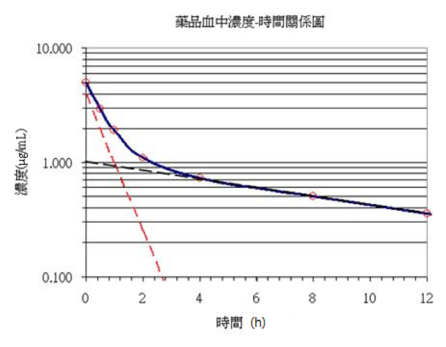
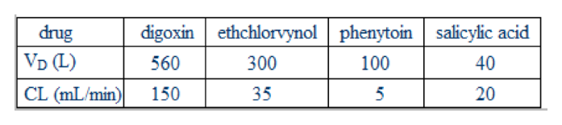
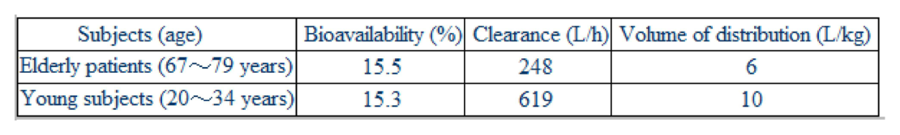
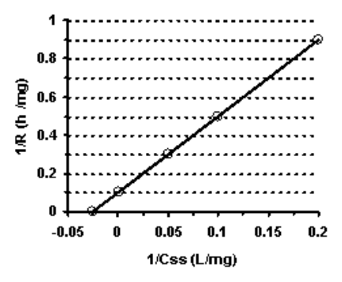

開卷有益 ／
藥師 ／ 藥劑學與生物藥劑學 ／ 108 年第 1 次108 年第 1 次藥師藥劑學與生物藥劑學試題與答案
這一頁是民國 108 年第 1 次藥師藥劑學與生物藥劑學的整份歷屆試題，共 80 題，題目與標準答案出自考選部「國家考試試題及測驗式試題答案」開放資料，其中 79 題附有詳解。以下逐題列出題幹、選項與答案；要計時作答或記錄成績，請用線上練習。
考選部原始場次代碼：108030
線上作答這一科 →
全部 80 題
第 1 題
下列單位換算何者錯誤？
（A） 1 mm = 1,000,000 nm（B） 1 dm = 100 cm（C） 1 ng = 1,000 pg（D） 1 L = 1,000 mL答案：（B）
詳解與考點 正解：分米與公分的換算要先回到公尺：1 dm = 10^-1 m，1 cm = 10^-2 m，因此 1 dm = 10 cm，不是 100 cm；（B）錯誤，故選 B。
A：1 mm = 10^-3 m、1 nm = 10^-9 m，兩者相差 10^6，故 1 mm = 1,000,000 nm，敘述正確，故非答案。
C：nano 為 10^-9、pico 為 10^-12，兩者相差 10^3，故 1 ng = 1,000 pg，敘述正確，故非答案。
D：1 L = 10^-3 m^3，而 1 mL = 10^-6 m^3，兩者相差 1,000 倍，故敘述正確，故非答案。
本題考點：SI 字首換算（SI prefixes）——先把兩個單位各自寫成基本單位的 10 次方，再比較指數差；長度換算（length conversion）——deci 是 10^-1、centi 是 10^-2，所以 1 dm 固定等於 10 cm。
第 2 題
若0.5 mole的NaOH加到體積為1 L的0.2 M HCl溶液中，pH從1.8升到2.6，其緩衝容量（buffer capacity）為多 少M？
（A） 0.25（B） 0.625（C） 1.60（D） 3.125答案：（B）
詳解與考點 正解：緩衝容量以每公升溶液使 pH 改變一個單位所需的強酸或強鹼量表示。題設加入 NaOH 為 0.5 mol，體積為 1 L，故濃度變化 ΔC = 0.5 mol / 1 L = 0.5 mol/L。pH 變化 ΔpH = 2.6 - 1.8 = 0.8。代入 β = ΔC / ΔpH = 0.5 mol/L / 0.8 = 0.625 mol/L·pH^-1，選項以 M 表示為 0.625 M，故選 B。
A：0.25 M 未依題設的 pH 變化 0.8 進行除法，不能表示每一個 pH 單位所需的量。
C：1.60 是 0.625 的倒數，等同把緩衝容量公式的分子與分母顛倒。
D：3.125 不由題設的加入量、體積與 pH 差代入緩衝容量公式而得，故不正確。
本題考點：緩衝容量（buffer capacity）——先將加入的強酸或強鹼換為 mol/L，再除以 pH 的改變量；單位一致性（unit consistency）——計算前先確認加入量與溶液體積已合併為濃度，不能直接以 mol 除 pH。
第 3 題
中華藥典第八版所記載之顛茄酊劑，藥品成分含量應符合下列那項規定標準？
（A） 每100 mL代表藥品5 g之效能（B） 每100 mL代表藥品10 g之效能（C） 每100 mL代表藥品20 g之效能（D） 每100 mL代表藥品50 g之效能答案：（B）
詳解與考點 正解：題幹指定中華藥典第八版的顛茄酊劑規格；該標準以每 100 mL 代表藥品 10 g 的效能表示，因此（B）符合規定，故選 B。
A：每 100 mL 代表藥品 5 g 屬 5% 的稀釋型酊劑濃度；酊劑的通例是毒劇性生藥（如顛茄）以每 100 mL 相當生藥 10 g 表示，故 5 g 低於題幹所指定版本的規格，不正確。
C：每 100 mL 代表藥品 20 g 是非毒劇性生藥酊劑（20%）的常見規格，把它套到毒劇性的顛茄即高估一倍，不是該版顛茄酊劑所定的含量標準，故不正確。
D：每 100 mL 代表藥品 50 g 已高於各類酊劑的通用濃度，毒劇性生藥更不可能採此高濃度，同樣不符合該品項的規格，故不正確。
本題考點：藥典品項規格（pharmacopoeial monograph）——遇到指定版本的品項題，依該版規格比對濃度或效能，不以其他製劑的常用濃度替代；酊劑效能表示（tincture strength）——判讀時先確認基準體積與其代表的藥品量是否成對一致。
第 4 題
依據中華藥典第八版，有關注射⽤⽔（water for injection）之敘述，下列何者最正確？
（A） 是經過滅菌處理之⽔（B） 可添加抑菌劑（C） 必須為等張溶液（D） 可供製造注射劑之⽤答案：（D）
詳解與考點 正解：water for injection 是符合注射用水品質要求、可供製造注射劑的製程用水；它本身不等同於已滅菌的注射用水製劑，也不必預先調成等張，故選 D。
A：（A）把 water for injection 與 sterile water for injection 混為一談。是否已滅菌是成品用途與包裝的要求，不能作為注射用水本身的定義，故不正確。
B：抑菌劑不是 water for injection 的組成；是否使用防腐或抑菌成分應依最終注射劑的處方與用途判定，故不正確。
C：等張性是最終注射劑為減少組織刺激而可能調整的性質，並非製造用水必備條件，故不正確。
本題考點：注射用水（water for injection）——先區分製程用水與最終注射劑，前者的核心是水質規格；無菌注射用水（sterile water for injection）——看到 sterile 時才判斷滅菌與成品容器等要求，不能與一般注射用水互換。
第 5 題
甲醛溶液產⽣⽩⾊結晶時，可能是產⽣下列何種反應？
（A） ⽔解反應（B） 氧化反應（C） 聚合反應（D） ⽔合反應答案：（C）
詳解與考點 正解：甲醛溶液久置而形成白色結晶，通常是甲醛分子連結成多聚甲醛（paraformaldehyde）的結果，屬聚合反應，故選 C。
A：水解反應是化學鍵在水參與下斷裂，與甲醛單體聚集形成白色結晶的現象不符。
B：甲醛氧化可形成較高氧化態產物，並非造成多聚甲醛白色結晶的主要反應，故不正確。
D：甲醛與水的水合主要形成溶液中的水合型態，不能解釋固體多聚物析出的現象，故不正確。
本題考點：甲醛聚合（formaldehyde polymerization）——甲醛溶液出現白色結晶時，優先聯想到多聚甲醛的生成；物理狀態判讀（physical-state clue）——溶液中析出聚合物與單純水合或氧化的表現不同，可作為反應類型的辨識線索。
第 6 題
下列何種糖漿最適合⽤於苦味藥品之矯味劑？
（A） cherry syrup（B） orange syrup（C） cocoa syrup（D） raspberry syrup本題送分，無標準答案
詳解與考點 本題經考選部公告一律給分。矯正苦味藥品之矯味劑，(A)cherry syrup與(C)cocoa syrup皆為教材公認適合遮蔽苦味之糖漿——櫻桃糖漿因其本身濃烈果香常用於掩蓋苦味藥物，可可糖漿則因本身帶苦甜複合味而特別適合矯正苦味，兩者何者「最適合」因版本不同見解分歧，故送分。(B)orange syrup與(D)raspberry syrup教材多歸類為適合矯正酸味或鹹味藥品，非苦味首選，可排除。作答以現行藥劑學矯味劑分類為準。
第 7 題
以流體受⼒之切變速率（Y軸）對應⼒（X軸）作圖，當A與B兩流體為通過原點的直線，且A的直線斜率⼤於 B，下列敘述何者正確？
（A） A為⽜頓流體（B） B為塑性流體（C） A的黏稠度⼤於B（D） ⼆者具有搖變性答案：（A）
詳解與考點 正解：圖的縱軸是切變速率、橫軸是應力。對牛頓流體有 shear stress = viscosity × shear rate，改寫為 shear rate = shear stress / viscosity；通過原點的直線即代表牛頓行為。A 的斜率較大表示 1/viscosity 較大、黏度反而較小；（A）為牛頓流體，故選 A。
B：塑性流體需先克服屈服值才開始流動，應力與切變速率圖不會是通過原點的直線，故不正確。
C：本圖的斜率為 1/viscosity，A 的斜率大表示 A 的黏度小於 B，不是大於 B。
D：搖變性屬與受力時間相關的非牛頓行為，通常以升降剪切速率的遲滯現象判定，不能由兩條通過原點的直線推出。
本題考點：牛頓流體（Newtonian fluid）——剪切應力與切變速率成正比且圖線通過原點時，可判為牛頓行為；黏度與斜率（viscosity and slope）——縱軸若是切變速率、橫軸是應力，斜率是黏度的倒數，讀圖前先確認座標軸。
第 8 題
已知⽔的表⾯張⼒是72 dyne/cm，加入界⾯活性劑開始出現微膠粒的濃度是0.232（w/v），此時⽔的表⾯張 ⼒是60 dyne/cm，若界⾯活性劑濃度增加為原本2倍，則⽔的表⾯張⼒為多少（dyne/cm）？
（A） 72（B） 66（C） 60（D） 48答案：（C）
詳解與考點 正解：0.232（w/v）是開始形成微膠粒的臨界微膠粒濃度（CMC）。界面活性劑濃度達 CMC 時，表面張力已降至 60 dyne/cm；再增加的界面活性劑主要形成微膠粒，界面單體濃度近乎不再增加，因此加倍後仍約為 60 dyne/cm，故選 C。
A：72 dyne/cm 是尚未加入界面活性劑時水的表面張力，與濃度已超過 CMC 的條件不符。
B：66 dyne/cm 是把表面張力變化視為全程線性所得到的中間值；達 CMC 後曲線會趨於平台，不能這樣內插。
D：48 dyne/cm 是把達 CMC 前的下降趨勢繼續外推；微膠粒開始形成後，表面張力不再隨總濃度等比例下降。
本題考點：臨界微膠粒濃度（critical micelle concentration, CMC）——先找開始形成微膠粒的濃度，超過該點時優先判斷界面性質進入平台；表面張力曲線（surface-tension curve）——濃度低於 CMC 才有顯著下降，不能把前段斜率延伸到 CMC 之後。
第 9 題
若醋酸溶液被活性碳吸著時之雙對數關係圖為直線，則該吸著現象遵循下列何種等溫曲線⽅程式？
（A） Freundlich isotherm（B） Langmuir isotherm（C） Brunauer-Emmett-Teller equation（D） Gibbs adsorption equation答案：（A）
詳解與考點 正解：當吸著量與平衡濃度作雙對數圖呈直線，表示 log(x/m) = log K + (1/n) log C 的關係，正是 Freundlich isotherm，故選 A。
B：Langmuir isotherm 假設有限的單層吸著位點，常以 C/(x/m) 對 C 的線性關係判讀，不是本題的雙對數直線。
C：Brunauer-Emmett-Teller equation 用於多層吸附的分析，其線性化形式與題幹所述的 Freundlich 雙對數關係不同。
D：Gibbs adsorption equation 連結表面過量與表面張力的變化，並非以固體吸著量對濃度的雙對數直線判讀。
本題考點：Freundlich 等溫吸著式（Freundlich isotherm）——看到吸著量與濃度的 log-log 圖為直線時，直接對應 Freundlich 模型；等溫吸著模型辨識（adsorption isotherms）——先依圖的座標轉換與假設的單層或多層特性區分模型，不只看名稱。
第 10 題
有80 mL的懸液劑，凝絮沉降物的沉降體積0.625，若凝絮度是5，則解凝絮沉降物的沉降體積為多少？
（A） 50（B） 5（C） 1.25（D） 0.125答案：（D）
詳解與考點 正解：凝絮度的關係式為 β = F / F∞。題設凝絮沉降體積 F = 0.625、凝絮度 β = 5，故解凝絮沉降體積 F∞ = F / β = 0.625 / 5 = 0.125。沉降體積是比值，80 mL 已包含在 F 的定義中而不需再乘入，故選 D。
A：50 是以 80 mL × 0.625 得到的凝絮系統實際沉降體積，並非題目要求的解凝絮沉降體積比。
B：5 是題設給定的凝絮度 β，不是要求反推的 F∞。
C：1.25 是將 0.625 加倍的結果，未使用 β = F / F∞ 的關係式，故不正確。
本題考點：凝絮度（degree of flocculation）——以 β = F / F∞ 比較凝絮與解凝絮系統，要求 F∞ 時必須用 F 除以 β；沉降體積（sedimentation volume）——F 與 F∞ 為無因次比值，除非題目明問實際體積，否則不要額外乘回原始懸液體積。
第 11 題
將明膠膠體受⼒之變形度（Y軸）對應⼒⼤⼩（X軸）作圖，在彈性限度內所得的直線斜率值為5 ×10-7，則 楊⽒係數(Young's modulus)為多少dyne/cm2？
（A） 5 ×10-7（B） 2×106（C） 2×10-7（D） 5×106答案：（B）
詳解與考點 正解：題圖的縱軸為變形度、橫軸為應力，因此直線斜率是 strain / stress，也就是楊氏係數 E 的倒數。已知斜率 = 5 × 10^-7，故 E = 1 / (5 × 10^-7) = 0.2 × 10^7 = 2 × 10^6 dyne/cm2，故選 B。
A：5 × 10^-7 是圖線斜率，即楊氏係數的倒數，不是楊氏係數本身。
C：2 × 10^-7 未對斜率取倒數，且指數方向與計算結果不符。
D：5 × 10^6 雖為較大的數值，但不是 5 × 10^-7 的倒數，故不正確。
本題考點：楊氏係數（Young's modulus）——E = stress / strain，縱軸為 strain、橫軸為 stress 時，圖線斜率必須取倒數；科學記號倒數（scientific-notation reciprocal）——先取係數倒數再調整 10 的指數，例如 1 / (5 × 10^-7) = 2 × 10^6。
第 12 題
皂⼟（bentonite）不適合與benzalkonium chloride抗菌劑⼀起調配之原因為何？
（A） 有物理性吸附（B） 有化學性吸附（C） 因pH值為4（D） 皂⼟會形成gel答案：（B）
詳解與考點 正解：皂土表面帶負電且具有陽離子交換位點，benzalkonium chloride 為陽離子型抗菌劑，兩者相遇會發生離子結合或交換造成化學性吸著，使可作用的抗菌劑量下降，故選 B。
A：本題的關鍵不是一般非特異性的物理性吸附，而是皂土與陽離子型抗菌劑的帶電交互作用，故不正確。
C：pH 4 不是皂土與 benzalkonium chloride 不宜併用的主要判準；分辨關鍵在兩者的離子性與吸著作用。
D：皂土可形成 gel 是其作為賦形劑的性質，但不能解釋 benzalkonium chloride 抗菌效力受影響的原因，故不正確。
本題考點：化學性吸著（chemical adsorption）——帶電藥物或防腐劑遇到具有離子交換位點的賦形劑時，要先判斷有效濃度是否被吸著降低；benzalkonium chloride 相容性（benzalkonium chloride compatibility）——陽離子型抗菌劑應避開會與其產生強帶電交互作用的材料。
第 13 題
預製備懸浮液，當顆粒直徑減為原來的⼗分之⼀時，沉降速率變化為何？
（A） 增加10倍（B） 增加100倍（C） 減緩10倍（D） 減緩100倍答案：（D）
詳解與考點 正解：依 Stokes' law，其他條件相同時沉降速率 v 與粒徑 d 的平方成正比，即 v ∝ d^2。顆粒直徑變為原來的 1/10，則新舊速率比 = (1/10)^2 = 1/100，因此沉降速率減為原來的 1/100，即減緩 100 倍，故選 D。
A：顆粒縮小會增加介質阻力相對效應，沉降不會增加 10 倍，方向已相反。
B：顆粒縮小同樣不會增加 100 倍；Stokes' law 顯示粒徑愈小，沉降愈慢。
C：減緩 10 倍只把粒徑與沉降速率當成一次關係，忽略了粒徑平方的關係，故不正確。
本題考點：Stokes 定律（Stokes' law）——比較懸浮粒子沉降速率時，先確認其他條件相同，再套用 v ∝ d^2；粒徑控制（particle-size control）——粒徑縮小 n 倍會使沉降速率縮小 n^2 倍，是提升懸浮液物理安定性的基本判準。
第 14 題
⼀懸浮液沉降體積F與F∞值分別為0.5與0.1時，凝絮度（β）為下列何者？
（A） 0.1（B） 0.2（C） 0.5（D） 5答案：（D）
詳解與考點 正解：凝絮度的關係式為 β = F / F∞。題設 F = 0.5、F∞ = 0.1，逐步代入 β = 0.5 / 0.1 = 5，因此（D）正確，故選 D。
A：0.1 是題設的解凝絮沉降體積 F∞，不是凝絮度 β。
B：0.2 是 F∞ / F 的結果，將凝絮度的分子與分母顛倒，故不正確。
C：0.5 是題設的凝絮沉降體積 F，不是兩種沉降體積的比值，故不正確。
本題考點：凝絮度（degree of flocculation）——固定使用 β = F / F∞，凝絮系統的沉降體積置於分子；沉降體積比較（sedimentation-volume comparison）——看到 F 與 F∞ 同時出現時，先辨識各自代表凝絮與解凝絮狀態，再進行除法。
第 15 題
經酸處理之明膠A型（gelatin A），其等電點在pH 7～9，則明膠A型在pH為多少時，具有最佳的乳化⼒？
（A） 3.2（B） 6.4（C） 8（D） 11答案：（A）
詳解與考點 正解：明膠的乳化力在偏離等電點、蛋白質帶足夠淨電荷時較佳。明膠 A 為酸處理型，等電點為 pH 7～9，在 pI 以下帶正電時於油水界面的吸附與水合最好；pH 3.2 正位於此酸性側，符合題目所問的最佳乳化條件，故選 A。
B：pH 6.4 接近明膠 A 的等電點範圍，帶電與水合較少，乳化力不會是最佳。
C：pH 8 位於明膠 A 的等電點範圍內，蛋白質淨電荷接近零，最不利於維持良好分散，故不正確。
D：pH 11 雖然也偏離等電點，但明膠 A 為酸處理型，最佳乳化條件固定配對在 pI 以下的酸性側 pH 3.2（鹼處理的 gelatin B 才配對 pH 8）；且 pH 11 的強鹼環境會促使明膠水解、破壞界面膜，故不是最佳乳化條件，不能把所有偏離等電點的 pH 視為等效。
本題考點：等電點與乳化力（isoelectric point and emulsifying power）——蛋白質型乳化劑通常避開 pI 以維持帶電與水合；明膠型別（gelatin type）——遇到 gelatin A 或 gelatin B 時，先比對其 pI 與題目給的 pH，若問最適值仍須依該型別的特異條件配對。
第 16 題
有關amoxicillin for oral suspension之敘述，下列何者正確？
（A） 為眼⽤懸液劑（B） 為乾燥藥品使⽤時加適當媒液形成懸液劑（C） 藥品加適當媒液完全溶解才可使⽤（D） 藥品加適當媒液靜置只取上清液使⽤答案：（B）
詳解與考點 正解：amoxicillin for oral suspension 是乾燥粉末或顆粒，使用前加入適當媒液調配為懸液；有效成分不需要以完全澄清溶液作為使用條件，故選 B。
A：amoxicillin for oral suspension 的給藥途徑為口服，不是眼用懸液劑，故不正確。
C：懸液劑的特徵是固體微粒分散在液體中，不必也不應要求完全溶解為澄清溶液。
D：調配後應使藥品均勻分散後使用，只取上清液會使實際取得的藥量失準，故不正確。
本題考點：口服乾粉懸液劑（powder for oral suspension）——使用前加入指定媒液形成均勻懸液，而非要求完全溶解；懸液劑均一性（suspension uniformity）——取用前維持或恢復均勻分散，不能只取上清液。
第 17 題
下列何者非中華藥典第八版所列之可可脂栓劑製備⽅法？
（A） 熔合法（B） 壓製法（C） 捏合法（D） 乳化法答案：（D）
詳解與考點 正解：題幹指定第八版中可可脂栓劑的製備方式；熔合法、壓製法與捏合法皆可列為該基質的製備方法，乳化法並非該處列舉的方法，故選 D。
A：熔合法可先使可可脂熔融，再與藥物混合並倒入模型成型，屬題幹所列製備方法，故非答案。
B：壓製法可用於栓劑的成型製備，屬題幹所列方法，故非答案。
C：捏合法亦屬該版對可可脂栓劑所列的製備方法，故非答案。
本題考點：可可脂栓劑製備（cocoa butter suppository preparation）——依基質與藥典列舉的方法配對，區分成型操作與乳化型製劑的概念；藥典版本（pharmacopoeial edition）——遇到版本題，依題幹指定版本判讀，不以現行版任意替換。
第 18 題
根據中華藥典第八版所述，聚⼄⼆醇軟膏中，如需加入少量⽔或⽔溶液時，可加入下列何種物質以減少軟化 現象？
（A） ⽢油（B） ⼗⼆醇（C） ⼗八醇（D） 明膠答案：（C）
詳解與考點 正解：聚乙二醇軟膏加入少量水或水溶液後，需用能增加稠度的成分抵銷軟化；十八醇（stearyl alcohol）為長鏈脂肪醇，可作為稠度調整成分，因此（C）符合題幹所述處方處理，故選 C。
A：甘油主要作為保濕與潤濕成分，不能作為本題所述減少聚乙二醇軟膏軟化的指定稠度調整劑。
B：十二醇的碳鏈較短，並非題幹所指用以減少軟化的十八醇，故不正確。
D：明膠可形成膠體結構，但不是本題藥典處方中加入少量水後用來調整聚乙二醇軟膏稠度的成分，故不正確。
本題考點：聚乙二醇軟膏（polyethylene glycol ointment）——水相加入可能改變基質稠度，須依處方選擇能恢復結構的輔料；脂肪醇稠度調整（fatty-alcohol consistency adjustment）——長鏈脂肪醇可增加半固體製劑的稠度，選擇時要區分保濕劑與結構調整劑。
第 19 題
下列何者不是glycerin常在劑型中可能扮演的⾓⾊？
（A） 糖漿的preservative（B） 糖漿的sweetening agent（C） 軟膏的stiffening agent（D） 軟膏的humectant答案：（C）
詳解與考點 正解：glycerin 在糖漿與軟膏中的角色以吸濕、保濕與增甜為主；它是液態多元醇，無法提供軟膏增硬所需的固態骨架（該功能另由蠟、硬脂酸、鯨蠟醇等成分擔任），因此不是軟膏 stiffening agent，故選 C。
A：糖漿中的 glycerin 可在適當濃度下降低水活性，因而可能兼具 preservative 的作用；這與它不是增硬成分並不衝突。
B：glycerin 帶有甜味，可作為糖漿的 sweetening agent；其甜味功能與保濕功能可以同時存在。
D：glycerin 的吸濕性可減少軟膏水分散失，故是常見的 humectant；增加硬度並非此項功能。
本題考點：甘油的劑型功能（glycerin functions）——看到糖漿或軟膏時，先由吸濕性判斷保濕與甜味角色，不把它當增硬劑；水活性控制（water activity control）——多元醇在足夠濃度下可降低可供微生物利用的水分，故可輔助防腐。
第 20 題
消散乳霜（vanishing creams）配⽅中stearic acid所占的百分比為：
（A） 0～5（B） 10～25（C） 30～40（D） 45～50答案：（B）
詳解與考點 正解：消散乳霜的主要脂肪酸是 stearic acid；部分與鹼中和形成乳化結構，未中和部分在皮膚上留下薄膜而呈現消散感。其常用比例為 10～25%，故選 B。
A：0～5% 的 stearic acid 含量不足以構成消散乳霜的主要脂肪酸相，無法對應其典型配方範圍。
C：30～40% 已高於消散乳霜常用的 stearic acid 比例；脂肪酸相過高會改變乳霜的塗展與膏體性質。
D：45～50% 更明顯超出常用範圍，不能作為此劑型的標準百分比。
本題考點：消散乳霜（vanishing cream）——辨認配方時看 stearic acid 是否兼任脂肪酸相與皂化乳化來源；脂肪酸皂乳化（fatty-acid soap emulsification）——部分脂肪酸與鹼形成界面活性物，剩餘脂肪酸則保留乳霜的膚感。
第 21 題
下列何種基劑較適合⽤來製備治療內痔之栓劑？
（A） 可可脂（B） 聚⼄⼆醇（C） ⽢油明膠（D） 氫化植物油答案：（A）
詳解與考點 正解：內痔局部治療需要在直腸溫度下釋放並兼具潤滑保護的基劑。可可脂在體溫附近熔融，能在黏膜表面形成油性層，符合此用途，故選 A。
B：聚乙二醇為水溶性基劑，以溶解方式釋放藥物；它不以提供油性潤滑保護為長處，與本題的局部內痔情境不如可可脂吻合。
C：甘油明膠吸濕性高且以較緩慢溶解方式釋放，作用型態與內痔局部所需的潤滑保護不如可可脂合適。
D：氫化植物油也可形成脂肪性基劑，但熔點與組成會隨氫化程度而變；題目的典型內痔局部栓劑以可可脂為較適合選擇。
本題考點：栓劑基劑（suppository bases）——局部直腸病灶若需要保護與潤滑，優先辨認能在體溫熔融的油脂性基劑；可可脂（cocoa butter）——判斷其適用性時看體溫熔融與油性覆蓋，而非只看是否能製成栓劑。
第 22 題
下列何者不屬於醇類之軟膏基劑？
（A） cetyl alcohol（B） glycerol（C） pastibase（D） lanolin答案：（C）
詳解與考點 正解：分類的關鍵是基劑是否屬於醇類。（C）Pastibase 為複方油脂性膏狀基劑名稱，並非以醇類為主的軟膏基劑，故選 C。
A：cetyl alcohol 本身是脂肪醇，分子帶有羥基，可用於半固體製劑以調整稠度與質地，屬醇類相關成分。
B：glycerol 為帶三個羥基的多元醇，可作為親水性半固體系統的成分；不能因其液態外觀而排除其醇類性質。
D：lanolin 與羊毛脂醇（lanolin alcohols）成分相關，分子中同樣帶有羥基，且具吸水性，可作為吸收性軟膏基劑；它不是 Pastibase 所代表的油脂性膏狀基質。
本題考點：醇類軟膏基劑（alcohol ointment bases）——先由原料的化學類別與基質特性分類，不以商品名或外觀推斷；吸收性基劑（absorption bases）——羊毛脂類可吸收一定量水分，判斷時要和單純油脂性基劑分開。
第 23 題
粉末藥品添加入軟膏基劑時，先與研合劑（levigating agent）研合之⽬的為何？
（A） 增加滋潤性（B） 降低顆粒感（C） 增加⽔溶性（D） 降低平滑度答案：（B）
詳解與考點 正解：粉末進入軟膏前先用 levigating agent 潤濕研細，是為了使顆粒均勻分散並降低粗糙感。此步驟改善的是顆粒感與成品平滑度，而非改變藥物本身溶解度，故選 B。
A：研合劑可能具有油性或親水性，但預先研合的目的不是增加整體軟膏的滋潤性，而是協助粉末均勻分散。
C：研合只改變顆粒在基劑中的分散狀態，未改變藥物的化學溶解度，不能據此推論水溶性增加。
D：充分研合會減少顆粒造成的砂礫感並提高平滑度，與降低平滑度的方向相反。
本題考點：研合（levigation）——粉末加入半固體基劑前，先以少量相容液體研細潤濕，判斷目標是均勻分散與消除顆粒感；軟膏均勻性（ointment uniformity）——分散均一與藥物溶解是不同概念，不能由前者直接推出後者。
第 24 題
軟膏劑中含有下列何種成分時，不宜以鋼製藥⼑調製？
（A） ⽔楊酸（B） 氧化鋅（C） 澱粉（D） 沉澱硫答案：（A）
詳解與考點 正解：調製軟膏時須避免成分與器具發生反應。水楊酸具酸性，與鋼製藥刀接觸可能造成腐蝕或帶入金屬污染，宜用非金屬器具處理，故選 A。
B：氧化鋅在此調製情境中不會因接觸鋼製藥刀而成為禁用該器具的主要原因。
C：澱粉的處理重點是分散與避免受潮，並不因其本身需要排除鋼製藥刀。
D：沉澱硫的調製重點是使粉末均勻分散，沒有水楊酸與鋼器接觸的相容性問題。
本題考點：調製器具相容性（equipment compatibility）——選器具前先看藥品是否可能與金屬反應或造成污染；水楊酸（salicylic acid）——含酸性成分的半固體調製若可能接觸金屬，應優先考量非金屬器具。
第 25 題
下列何種材料可保護劑型通過胃部到達迴腸（ileum）後溶解⽽釋出藥物？
（A） hydroxyl propylmethylcellulose phthalate（HPMCP）（B） cellulose acetate phthalate（CAP）（C） shellac（D） methacrylic acid copolymer B（Eudragit S）答案：（D）
詳解與考點 正解：迴腸定位釋放要選擇在較高腸道 pH 才溶解的腸溶材料。methacrylic acid copolymer B（Eudragit S）的溶解門檻對應較遠端小腸，可使劑型先通過胃部再於迴腸釋放，故選 D。
A：hydroxyl propylmethylcellulose phthalate（HPMCP）可抗胃酸，但在較低腸道 pH 即開始溶解，較適合作為一般腸溶而非特異性迴腸釋放。
B：cellulose acetate phthalate（CAP）同樣能保護劑型通過胃部，但其溶解位置較前段小腸，不能作為本題的迴腸定位材料。
C：shellac 具腸溶特性，但溶解行為受配方與環境影響較大，不能像 Eudragit S 一樣作為較遠端小腸定位的標準選擇。
本題考點：腸溶包衣（enteric coating）——先判斷材料的溶解 pH 範圍，再連結胃、前段小腸或迴腸的釋放位置；Eudragit S（methacrylic acid copolymer B）——需要較遠端小腸釋放時，選擇比一般腸溶材料溶解門檻更高的聚合物。
第 26 題 待校
下列何者最具甜味，且遇⽔為放熱反應，咀嚼時有清涼感？
（A） Avicel（B） mannitol（C） sucrose（D） xylitol答案：（D）
第 27 題
有關compression coating之敘述，下列何者正確？
（A） 較利⽤pans進⾏糖衣包衣時，使⽤較多的包衣材料（B） 適⽤於對濕氣不穩定的藥品（C） 較利⽤pans進⾏糖衣包衣時，其產品之均⼀度較差（D） 製備之成品⼀般較⼤，不易吞嚥答案：（B）
詳解與考點 正解：compression coating 將核心與外層粉末以壓錠方式結合，不必接觸糖衣液或水性包衣液，因此可用於對濕氣不穩定的藥品，故選 B。
A：糖衣包衣須在 pans 中反覆塗布糖漿層，錠重常增加 50～100%，包衣材料用量遠高於壓製包衣；compression coating 以乾式壓製避免溶媒，用料反而較少，故「使用較多包衣材料」與事實相反。
C：壓錠時可控制核心與外層的重量，產品均一度不應概括為比 pans 糖衣包衣差。
D：成品大小取決於核心與外層設計，並非 compression coating 的成品必然較大且不易吞嚥。
本題考點：壓縮包衣（compression coating）——藥品怕濕時，優先辨認不需包衣液的乾式包覆流程；製程選擇（coating process selection）——比較包衣法時看是否接觸水分、溶媒與熱，不以非必然的錠劑尺寸或材料量作判準。
第 28 題
製備膜衣錠時，通常可添加下列何種賦形劑，以增加膜衣的柔韌性（flexibility）？
（A） film former（B） opaquant（C） plasticizer（D） surfactant答案：（C）
詳解與考點 正解：膜衣的柔韌性來自 plasticizer 插入高分子鏈間，降低脆裂並讓膜能隨錠芯應力變形，故選 C。
A：film former 的主要功能是形成連續膜層；若沒有調整高分子鏈間作用力，單靠成膜劑不一定能避免膜衣脆裂。
B：opaquant 用於遮光、遮蔽錠芯或調整外觀，不是增加膜衣柔韌性的成分。
D：surfactant 可改善潤濕、分散或噴灑液性質，但不以改變成膜高分子柔韌性為主要功能。
本題考點：塑化劑（plasticizer）——膜衣若需耐彎折與抗裂，判斷是否有能降低高分子鏈間作用力的成分；成膜劑（film former）——成膜與柔韌性是兩項不同功能，前者提供膜的骨架，後者修正其機械性質。
第 29 題
有關舌下錠之敘述，下列何者錯誤？
（A） 較不會被胃酸破壞（B） 作⽤比吞服的劑型快（C） 易受肝臟酵素代謝（D） 錠劑在⼝腔並不崩散⽽是溶解答案：（C）
詳解與考點 正解：舌下錠經舌下黏膜快速吸收後直接進入體循環，能避開首渡肝臟代謝；易受肝臟酵素代謝與此給藥途徑相反，故選 C。
A：舌下錠不經胃部崩散與吸收，因而較不受胃酸破壞，這是其相對口服吞服劑型的優點。
B：舌下黏膜血流豐富，藥物可迅速進入循環，通常比吞服後再經腸胃吸收的作用更快。
D：舌下錠設計為在口腔內溶解後釋放藥物，而不是像一般吞服錠劑那樣先在胃腸道崩散。
本題考點：舌下給藥（sublingual administration）——判斷途徑優勢時看藥物是否經口腔黏膜直接入體循環；首渡代謝（first-pass metabolism）——只有先經腸胃吸收並入門脈循環的藥物才會先受到肝臟代謝，舌下吸收可避開此路徑。
第 30 題
下列何者不適合作為包覆性圓粒（coated beads）劑型的包覆材料？
（A） beeswax（B） glyceryl monostearate（C） hydroxypropyl methylcellulose（D） ethylcellulose答案：（C）
詳解與考點 正解：本題的 coated beads 是以包覆層調控釋放的圓粒，包覆物須能形成持久的疏水或水不溶性屏障。hydroxypropyl methylcellulose 本身易溶於水，單獨用作這類控制釋放包覆層會迅速溶解，故選 C。
A：beeswax 為疏水性蠟質，可形成延緩水分進入與藥物逸出的脂質屏障，適合用於圓粒包覆。
B：glyceryl monostearate 具脂質性，可用於形成疏水包覆層，以調整圓粒的釋放速度。
D：ethylcellulose 為水不溶性成膜高分子，是控制釋放包覆圓粒的常用材料。
本題考點：包覆圓粒（coated beads）——題目若強調以包覆層控制釋放，先選水不溶或疏水性材料；控制釋放包衣（modified-release coating）——成膜能力不足以判定適用性，還要看膜在腸液中是否能維持釋放屏障。
第 31 題
對於利⽤惰性塑化（inert plastic）材料如聚⼄烯製備的含藥基質性錠片（matrix tablets）⽽⾔，下列敘述何 者正確？
（A） 可以完全的溶解於胃腸道（B） 其製備⽅法為擠出⽽成型（C） 主要釋出機制是藥物擴散（D） 需要再與速放性錠片共服答案：（C）
詳解與考點 正解：聚乙烯屬 inert plastic，不在腸胃道溶蝕；水分進入基質後，藥物沿高濃度至低濃度的路徑擴散出來，因此主要釋出機制是藥物擴散，故選 C。
A：惰性塑化基質不會完全溶解於胃腸道，藥物釋出後基質可能仍以殘留外殼形式排出。
B：惰性塑化基質錠的標準製法，是將藥物與聚乙烯等塑膠粉末混合造粒後直接壓錠，並非擠出成型，故本敘述錯誤。
D：是否需要速放部分取決於治療與處方設計，不是惰性塑化基質錠必須與速放錠共服的條件。
本題考點：惰性塑化基質（inert plastic matrix）——基質不溶蝕時，先以擴散判斷藥物釋放；擴散控制釋放（diffusion-controlled release）——水進入孔隙後，藥物依濃度梯度向外移動，與基質本身完全溶解的機制不同。
第 32 題
於相同混合條件下，就藥品之粗粒與細粒比較，細粒通常有何特性？
（A） 流動性較佳（B） 於儲存時較不會因振動⽽產⽣分離狀態（C） 較不易溶解或分散於⽔中（D） 較易與其他細粉末混合均勻答案：（D）
詳解與考點 正解：細粒具有較大比表面積，與粒徑相近的細粉混合時較容易均勻分散；因此比較的判準不是單看粒徑，而是凝聚與分離傾向，故選 D。
A：細粒的表面作用力相對顯著，較容易凝聚，流動性通常不如粗粒。
B：混合物受振動時，細粒可穿過粗粒間的空隙而下移，反而可能造成粒徑分離，不能說較不會分離。
C：細粒因比表面積較大，與水接觸面積增加，通常較容易溶解或分散，而非較不容易。
本題考點：粒徑與流動性（particle size and flowability）——細粒增加表面作用力時，先預期凝聚與流動變差；粉體分離（powder segregation）——振動下的小粒下滲是常見分離機制，混合均勻要同時考量粒徑匹配。
第 33 題
有關以吹泡法製備「軟膠囊劑」之敘述，下列何者錯誤？
（A） 可得無縫圓球狀之軟膠囊（B） 製備時常須借助冷卻媒劑之冷卻（C） 可連續⼤量⽣產（D） 通常先預製膠殼，再⾏內液之填充，即進⾏階段式製程答案：（D）
詳解與考點 正解：吹泡法在膠液與內容液同時形成液滴後，經冷卻媒劑使膠殼凝固，因此可連續產生無縫球狀軟膠囊。它不是先製膠殼再填充內液的兩階段製程，故選 D。
A：液滴在冷卻媒劑中凝固時可形成無縫的圓球狀軟膠囊，這是吹泡法的製程特徵。
B：冷卻媒劑用以讓膠液外層迅速定型，故冷卻是此法成殼的重要步驟。
C：吹泡與冷卻可連續進行，適合連續大量生產，而非逐粒手工製作。
本題考點：吹泡法（bubble method）——若膠殼與內容液同步形成液滴並經冷卻定型，判為連續式無縫軟膠囊製程；軟膠囊製程（soft gelatin capsule manufacturing）——先成殼再填充與同步成滴成殼是兩種不同的製程邏輯。
第 34 題
Polyox®為⾼分⼦量之ethylene oxide polymer，有時會添加於吹入劑（insufflated powders）的配⽅中，通 常其添加之主要⽬的為何？
（A） 延⻑藥物於黏膜之作⽤時間（B） 增加藥物溶解度及溶離（C） 使於黏膜處具等張性（D） 具抗菌作⽤，輔以增強藥效答案：（A）
詳解與考點 正解：Polyox 為高分子量 ethylene oxide polymer，具黏膜附著性，可使吹入粉末在黏膜停留較久，主要目的為延長藥物的局部作用時間，故選 A。
B：Polyox 的主要用途是增加黏膜停留，不是藉由改變溶媒環境來提升藥物溶解度或溶離。
C：等張性通常以適當小分子溶質調整；高分子量 Polyox 的添加目的不是提供等張性。
D：Polyox 不以抗菌活性作為藥效增強機制，不能把黏膜附著作用誤作抗菌作用。
本題考點：黏膜附著聚合物（mucoadhesive polymers）——吹入粉末若需延長局部暴露，選能附著黏膜的高分子；Polyox（polyethylene oxide polymer）——高分子量帶來的主要配方價值是滯留與附著，不是等張、抗菌或直接增溶。
第 35 題
有關硬膠囊劑製備時之敘述，下列何者錯誤？
（A） 混合藥物與稀釋劑時，若將這些粉末預⾏研磨，再⾏混合，通常可提升混合效率（B） 空膠殼最⼤者為0號（C） 主藥與稀釋劑之粒徑與密度相近時較易混勻（D） 膠囊劑可填充之粉末通常約為65 mg～1 g之間答案：（B）
詳解與考點 正解：硬膠囊空膠殼的號碼愈小，容量愈大；常見最大規格為 000 號，而非 0 號，所以題幹所問的錯誤敘述是 B，故選 B。
A：主藥與稀釋劑預先研磨可減少粗大顆粒與聚集，使後續混合較易均勻，符合一般粉體混合原則。
C：主藥與稀釋劑的粒徑及密度相近時，混合後較不易因粒徑或密度差異分離，因此較易混勻。
D：硬膠囊的常見粉末充填量可隨殼號與粉體密度改變，題列約 65 mg～1 g 是常用範圍。
本題考點：硬膠囊殼號（hard capsule sizes）——比較容量時記住號碼愈小、膠囊愈大，000 號在 0 號之前；粉體混合（powder mixing）——粒徑與密度接近可降低分離傾向，是提高含量均一性的基本判準。
第 36 題
將粉體藥物製備成錠片時，通常不⼀定需要添加的賦形劑為下列何者？
（A） 稀釋劑（diluents）（B） 安定劑（stabilizers）（C） 黏合劑（binders）（D） 潤滑劑（lubricants）答案：（B）
詳解與考點 正解：安定劑只在主藥或配方有特定安定性風險時才加入，不是粉體壓錠的基本功能性需求；相較之下，稀釋、黏合與潤滑通常分別處理體積、成錠性與壓錠摩擦，故選 B。
A：主藥劑量小或粉體體積不足時，稀釋劑可補足錠重並改善製程性，是錠劑配方的常見功能成分。
C：黏合劑用以提高粉體或顆粒間的結合力，讓錠劑具有足夠機械強度；直壓配方可由其他成分提供此功能，但黏合仍是基本製錠需求之一。
D：潤滑劑可降低壓錠時粉體與沖模間的摩擦並利於出錠，是常見的製程輔助成分。
本題考點：錠劑賦形劑（tablet excipients）——判斷是否必加時，先分清製程基本功能與只在特定風險出現時才需要的功能；安定劑（stabilizers）——藥物有氧化、水解或其他安定性問題時才依機制選用，不能視為每個錠劑的固定成分。
第 37 題
有關滅菌注射⽤⽔（sterile water for injection, USP）之敘述，下列何者最正確？
（A） ⼀般是供多次使⽤的容器包裝（B） 內毒素（endotoxin）之容許含量上限是2.5 USP EU/mL（C） 不可添加抗菌劑（D） 任何體積之包裝均可以直接以靜脈注射給與答案：（C）
詳解與考點 正解：sterile water for injection, USP 是無菌、無熱原的單次使用稀釋或溶解用水，且不得添加抗菌劑；含抗菌劑的是 bacteriostatic water for injection，故選 C。
A：供多次使用的注射用水需有相應的抑菌設計；sterile water for injection 本身為單次使用包裝，不能視為一般多次使用容器。
B：sterile water for injection 的細菌內毒素限度為每毫升不得超過 0.25 USP EU，題列 2.5 USP EU/mL 高出 10 倍，不能以此數值判定合格。
D：此製劑主要供溶解或稀釋注射用藥；無溶質的水若直接靜脈大量給予會有滲透壓風險，並非任何體積都可直接靜脈注射。
本題考點：滅菌注射用水（sterile water for injection）——先區分無抗菌劑的單次使用水與含抗菌劑的 bacteriostatic water；注射液滲透壓（parenteral tonicity）——注射用溶媒可供復溶，不代表能不經調整而以任意體積直接靜脈給藥。
第 38 題
以光阻微粒測定法進⾏微粒物質檢查時，容量100毫升以上的注射劑，每毫升等於或⼤於10微米者，容許範 圍的規定是不得超過多少個？
（A） 5（B） 10（C） 25（D） 50答案：（C）
詳解與考點 正解：依題述的光阻微粒測定法與容量條件，≥10 μm 微粒的每毫升允收上限為 25 個；比較時須同時鎖定檢查法、容器容量及粒徑門檻，故選 C。
A：5 個/mL 比此條件的允收上限更嚴格，並非題目指定的標準數值。
B：10 個/mL 同樣低於題述條件所對應的上限，不能作為本題答案。
D：50 個/mL 高於題述條件的允收上限，不能符合該微粒物質檢查規定。
本題考點：光阻微粒測定法（light obscuration particle count test）——先將檢查法、注射劑容量與粒徑下限三項條件配對，再讀取每毫升的數量限度；注射劑微粒規格（particulate matter limits）——不同容量或粒徑門檻可能對應不同上限，不能只憑單一數字套用。
第 39 題
有關注射劑標誌的敘述，下列何者最正確？
（A） 標誌係指注射劑容器上的文字，不包括圖形在內（B） 標籤係指直接容器上的任何標誌（C） 為標⽰完整，注射劑直接容器不必保留適當的空餘⾯積（D） 若直接容器上的標籤⾯積過⼩，只需標⽰製造者名稱與標誌即可答案：（B）
詳解與考點 正解：注射劑的標籤是直接容器上的任何標誌，涵蓋文字與圖形等辨識資訊；（B）的敘述正符合此範圍，故選 B。
A：標誌不限於文字，圖形也屬標示資訊；排除圖形會把標籤定義縮得過窄。
C：為使標示完整且可辨識，直接容器仍應保留適當可標示面積，不能主張完全不必留有空餘面積。
D：直接容器標籤面積雖小，仍須保有必要的辨識資訊；只列製造者名稱與標誌不足以完成注射劑標示。
本題考點：注射劑標示（parenteral labeling）——判斷標籤範圍時，將直接容器上的文字與圖形都納入；直接容器標示（immediate-container labeling）——面積受限時仍要保留必要識別內容，不能以空間不足為由只剩製造者資訊。
第 40 題
下列何者屬於⻑效型的胰島素注射劑？
（A） insulin aspart（B） regular insulin（C） isophane insulin（D） insulin glargine答案：（D）
詳解與考點 正解：關鍵在胰島素製劑的作用持續時間；（D）insulin glargine 注射後會在皮下形成微沉澱並緩慢釋放，以提供基礎胰島素濃度，屬長效型，故選 D。
A：（A）insulin aspart 為速效胰島素類似物，吸收快、作用時間短，主要用於餐時血糖控制。
B：（B）regular insulin 屬短效胰島素，起效與持續時間均不符合長效型的特徵。
C：（C）isophane insulin 即 NPH insulin，屬中效型，持續時間介於速效與長效製劑之間。
本題考點：基礎胰島素（basal insulin）——需要長時間平穩補充胰島素時，選持續釋放的長效製劑；胰島素作用時間（insulin duration of action）——以速效、短效、中效、長效區分製劑時，先看吸收與釋放速率。
第 41 題
下列何者可作為乾熱滅菌法確效之⽣物指⽰劑（biologic indicator）？
（A） Bacillus subtilis（B） Bacillus pumilus（C） Bacillus stearothermophilus（D） Bacillus thermophilus答案：（A）
詳解與考點 正解：乾熱滅菌確效須以耐受乾熱條件的芽孢作為生物指示劑；（A）Bacillus subtilis 的芽孢可用於檢驗乾熱滅菌是否達到預期殺菌效果，故選 A。
B：（B）Bacillus pumilus 常用於游離輻射滅菌的生物指示，不是乾熱法的標準配對。
C：（C）Bacillus stearothermophilus 的耐熱芽孢常用於濕熱蒸氣滅菌確效，與乾熱滅菌的條件不同。
D：（D）Bacillus thermophilus 並非本題乾熱滅菌法所用的標準生物指示劑。
本題考點：生物指示劑（biologic indicator）——確效時以最具抗性的微生物芽孢驗證滅菌程序；滅菌法配對（sterilization method matching）——乾熱、濕熱與輻射法應各自配對相應的生物指示劑。
第 42 題
何謂基因療法（gene therapy）？
（A） 利⽤⼀⼩段的DNA去尋找病毒感染或基因缺陷的細胞（B） 將外源性基因物質轉入⼈體細胞以糾正遺傳性或後天性基因缺陷的過程（C） 識別並結合特定mRNA分⼦的核苷酸序列，以預防非需要的蛋⽩質合成（D） 識別並結合特定DNA分⼦的核苷酸序列，以抑制蛋⽩質合成答案：（B）
詳解與考點 正解：本題問的是以遺傳物質矯正細胞缺陷的治療概念；（B）將外源性基因物質轉入人體細胞，以補足、置換或調整異常基因功能，正是基因療法的核心，故選 B。
A：（A）以一小段 DNA 辨識病毒感染或基因缺陷細胞，描述的是核酸探針用於偵測的概念，不是將治療性基因送入細胞。
C：（C）與特定 mRNA 結合以阻止蛋白質合成，屬反義核酸（antisense oligonucleotide）的作用策略。
D：（D）與特定 DNA 序列結合以抑制轉錄，著重在阻斷基因表現，並非導入外源基因以修正缺陷。
本題考點：基因療法（gene therapy）——判斷重點是是否把治療性遺傳物質導入細胞以改變疾病相關基因功能；反義核酸（antisense oligonucleotide）——目標是 mRNA 並抑制轉譯時，屬調控表現而非基因補償。
第 43 題
下列何種注射劑不應使⽤多劑量容器貯存？
（A） ⽪下注射（B） ⼼內注射（C） 肌內注射（D） ⽪內注射答案：（B）
詳解與考點 正解：多劑量容器須承受重複穿刺與抽取，製劑中必須添加抑菌劑；而心內注射（以及脊椎腔內、眼內注射）禁止使用含抑菌劑之製劑，（B）心內注射劑因此不應以多劑量容器貯存，故選 B。
A：（A）皮下注射劑在符合無菌與防腐要求時，得以多劑量容器供重複抽取，並非本題排除的途徑。
C：（C）肌內注射劑可在適當製劑與操作條件下使用多劑量容器，與心內注射的限制不同。
D：（D）皮內注射劑若符合多劑量製劑規範，並不因給藥途徑本身而一律排除多劑量容器。
本題考點：多劑量注射劑（multiple-dose injection）——判斷時同時看重複抽取造成的污染風險與給藥途徑的安全要求；心內注射（intracardiac injection）——直接進入心臟的途徑對製劑與操作風險容忍度最低。
第 44 題
依中華藥典之規定，若某注射劑之標誌容量為10.0 mL，且其為黏性液體，則該注射劑製備時每⼀容器充填 量需增加容量之最少限度為多少mL？
（A） 0.5（B） 0.7（C） 0.9（D） 1.2答案：（B）
詳解與考點 正解：本題是依中華藥典按標誌容量與液體黏性查定超量充填的最少值；標誌容量為 10.0 mL 的黏性液體，每一容器最少增加量為 0.7 mL，故選 B。
A：0.5 mL 低於該標誌容量之黏性液體所需的最少增加量，不能確保可取出標示容量。
C：0.9 mL 是標誌容量 20 mL 黏稠液體所定的最少增加量，1.2 mL 則對應 30 mL 黏稠液體；標誌容量 10.0 mL 者為易流動液體 0.5 mL、黏稠液體 0.7 mL，選 0.9 mL 是看錯容量列的結果。題目問的是規定的最少限度，不是任一較大的超量。
D：1.2 mL 同樣不是 10.0 mL 黏性液體所對應的最少增加量。
本題考點：超量充填（overfill）——注射劑須預留因黏附、殘留與抽取損失造成的容量差；標誌容量（labeled volume）——遇到藥典查表題時，先鎖定容量區間與液體性質，再判定最少增加量。
第 45 題
依中華藥典，apomorphine hydrochloride注射液可加入下列何者作為安定劑？
（A） disodium EDTA 0.01%（B） cysteine 0.5%（C） sodium bisulfite 0.05%（D） sodium metabisulfite 0.1%答案：（C）
詳解與考點 正解：apomorphine hydrochloride 容易受氧化而變質，題目所問的中華藥典處方以（C）sodium bisulfite 0.05% 作為安定劑，藉還原性抑制氧化，故選 C。
A：（A）disodium EDTA 0.01% 是螯合劑，雖可降低金屬催化氧化的影響，但不是本題藥典處方所列的安定劑。
B：（B）cysteine 0.5% 具有還原性，看似可用於抗氧化；惟題目問的是該注射液的指定處方，成分與濃度均不相符。
D：（D）sodium metabisulfite 0.1% 同屬含硫抗氧化劑，但化學品項與濃度不同，不能取代指定的 sodium bisulfite 0.05%。
本題考點：注射劑安定化（injection stabilization）——易氧化藥物可藉還原性抗氧化劑降低氧化降解；處方專論（pharmacopoeial monograph）——問到指定品項與濃度時，須同時核對成分、鹽類形式與百分濃度。
第 46 題
依中華藥典眼⽤軟膏⾦屬粒檢查法中，檢測50 μm及以上各型粒⼦，第⼀階段檢查共⽤10個檢品，其合格標 準為10個檢品中含8粒以上者，不得超過a個，粒⼦總數不得超過b個，（a，b）分別為多少？
（A） （1，5）（B） （1，50）（C） （5，50）（D） （5，100）答案：（B）
詳解與考點 正解：第一階段共檢查 10 個檢品時，50 μm 及以上粒子的合格判準同時限制高粒數檢品數與總粒數；含 8 粒以上者不得超過 1 個，粒子總數不得超過 50 粒，因此（a，b）為（1，50），故選 B。
A：（A）把粒子總數上限寫成 5 粒，過度縮小了本題第一階段的總數標準。
C：（C）允許 5 個檢品各含 8 粒以上，放寬了高粒數檢品的上限，與規定不符。
D：（D）同時把高粒數檢品數與粒子總數放寬為 5 個與 100 粒，均非第一階段標準。
本題考點：眼用軟膏金屬粒檢查（metal particle test for ophthalmic ointments）——判定時要分開計算高粒數檢品的個數與全部檢品的粒子總數；分階段檢查（stage testing）——先依該階段的樣本數與雙重限度作答，不可把不同階段標準混用。
第 47 題
依中華藥典，除標⽰為「無菌具管路醫療器材」外，所有醫療器材進⾏無菌試驗檢查時，下列何者正確？
（A） 使⽤孔徑0.45 μm濾膜（B） 使⽤孔徑0.22 μm濾膜（C） 使⽤PE材質濾膜（D） 不適⽤微孔濾膜過濾法答案：（D）
詳解與考點 正解：題幹指定的是除無菌具管路醫療器材外的一般醫療器材無菌試驗；此類檢品為固態成品，無法製成可通過濾膜的液體，故不適用微孔濾膜過濾法，而改以直接接種法（將器材整件或裁切後浸入培養基）檢查，故選 D。
A：（A）0.45 μm 是濾膜孔徑的描述，但本題這類醫療器材本就不採微孔濾膜過濾法，孔徑正確與否不改變方法不適用。
B：（B）0.22 μm 同樣是把濾膜過濾法的規格套入不適用該法的醫療器材檢查。
C：（C）改用 PE 材質濾膜也不能使原本不適用的微孔濾膜過濾法成為正確程序。
本題考點：無菌試驗（sterility test）——先依檢品型態判斷可用的試驗法，再討論濾膜孔徑或材質；醫療器材檢查（medical device testing）——方法適用性優先於單一操作參數，不能先假定濾膜法可用。
第 48 題
下列那些物質可以使⽤乾熱滅菌法來滅菌？①⽢油 ②⽯蠟 ③氧化鋅
（A） 僅①（B） 僅②③（C） 僅①②（D） ①②③答案：（D）
詳解與考點 正解：乾熱滅菌適合耐高溫、非水性且不宜以濕熱處理的物質；（①）甘油、（②）石蠟與（③）氧化鋅皆可使用乾熱法滅菌，因此三者皆可，故選 D。
A：（A）僅列①，漏掉同樣可耐乾熱處理的（②）石蠟與（③）氧化鋅。
B：（B）僅列②③，漏掉可採乾熱滅菌的（①）甘油。
C：（C）僅列①②，漏掉可採乾熱滅菌的（③）氧化鋅。
本題考點：乾熱滅菌（dry heat sterilization）——遇到油性、粉末或耐熱物質時，優先判斷其是否適合高溫無水處理；滅菌法選擇（sterilization method selection）——不宜濕熱的材料不等於不能滅菌，仍須看其耐熱性與含水性。
第 49 題
某藥品屬⼀室藥動性質，每12⼩時靜脈注射500 mg，已達穩定狀態，注射⼀劑後抽⾎得到數據如下表，此藥 的半衰期約為多少⼩時？ Time (h) 1 12 Cp (mg/L) 30 3
（A） 2.8（B） 3.3（C） 4.5（D） 6.6答案：（B）
詳解與考點 正解：以兩個穩定狀態下之血中濃度數據點求消除速率常數 ke：ke = ln(C1/C2) ÷ (t2-t1) ＝ ln(30/3) ÷ (12-1) ＝ ln(10) ÷ 11 ≈ 2.303 ÷ 11 ≈ 0.209 h-1；半衰期 t1/2 = 0.693 ÷ ke ≈ 0.693 ÷ 0.209 ≈ 3.3 小時，故選 B。
A：2.8 小時若沿計算路徑回推，較接近把時間差或濃度比代入錯誤後所得之結果。
C：4.5 小時同樣不對應本題兩個數據點代入公式後之計算結果。
D：6.6 小時恰為正確答案之兩倍，常見成因是把 ln(10) 誤算或把時間差代入錯誤所致。
本題考點：由兩點血中濃度計算半衰期（half-life from two concentration-time points）——先以 ln(C1/C2)÷(t2-t1) 求 ke，再以 0.693÷ke 求半衰期；穩定狀態下之消除相數據——須確認兩數據點皆位於消除相（分布相已結束）才能直接套用此公式。
第 50 題
藥品以下列何種劑型使⽤時，最有可能受⾸渡效應的影響？
（A） 栓劑（B） 舌下錠（C） 吸入劑（D） 發泡錠答案：（D）
詳解與考點 正解：首渡效應發生在藥物自腸道吸收後，先經門脈進入肝臟再到全身循環；（D）發泡錠經口服下嚥並在胃腸道吸收，最可能受到首渡代謝影響，故選 D。
A：（A）栓劑的直腸吸收可部分避開門脈循環，雖非完全沒有首渡效應，但不像口服胃腸吸收般最容易受影響。
B：（B）舌下錠經口腔黏膜直接進入全身循環，目的正是在避開腸肝首渡代謝。
C：（C）吸入劑由肺部吸收後進入全身循環，不須先經門脈與肝臟。
本題考點：首渡效應（first-pass effect）——胃腸吸收後先走門脈的藥物最須考慮肝臟代謝損失；給藥途徑（route of administration）——舌下、吸入與部分直腸給藥可降低或避開首渡影響。
第 51 題
藥品R於體內為⼀室線性動⼒學模式，靜脈注射給藥後，於2⼩時與4⼩時其⾎中濃度分別為30.0 μg/mL與 12.0 μg/mL ，藥品R之排除速率常數約為多少 h-1？（ln30 = 3.40, ln12 = 2.48）
（A） 2（B） 1（C） 0.5（D） 0.25答案：（C）
詳解與考點 正解：一室線性模式靜脈注射後遵循 ln Cp = ln C0 - kt，因此可用兩個濃度時間點求排除速率常數。k = (ln 30.0 - ln 12.0) / (4 h - 2 h) = (3.40 - 2.48) / 2 h = 0.46 h^-1，約為 0.5 h^-1，故選 C。
A：2 h^-1 未依兩次採樣相隔的 2 h 計算濃度對數差，明顯高於正確斜率。
B：1 h^-1 相當於未正確除以時間間隔，無法由題目兩點資料得到。
D：0.25 h^-1 低於以對數濃度差計得的 0.46 h^-1，並非四捨五入結果。
本題考點：一室排除（one-compartment elimination）——靜脈注射的一次動力學可由 ln Cp 對時間的斜率求 k；排除速率常數（elimination rate constant）——k 的單位為時間^-1，計算時必須使用對數濃度差除以時間差。
第 52 題
某降壓藥為線性⼀室模式藥物，其擬似分布體積為10L，該藥經靜脈注射6⼩時後，排除了給藥量的87.5%。 若改以靜脈輸注給藥（此注射劑濃度為10 mg/mL），欲達⽬標濃度為0.01 mg/mL，則輸注速率應為多少 mL/h？
（A） 70（B） 35（C） 7（D） 3.5答案：（D）
詳解與考點 正解：先由靜脈注射後的剩餘比例求清除率，再用 R0 = CL × Css 求輸注速率。6 h 後排除 87.5%，剩餘比例為 1 - 0.875 = 0.125 = (1/2)^3，故 6 h 為 3 個半衰期，t½ = 6 h / 3 = 2 h；k = 0.693 / 2 h = 0.3465 h^-1，CL = k × Vd = 0.3465 h^-1 × 10 L = 3.465 L/h。R0 = 3.465 L/h × 1000 mL/L × 0.01 mg/mL = 34.65 mg/h；注射劑為 10 mg/mL，故輸注速率 = 34.65 mg/h / 10 mg/mL = 3.465 mL/h，約為 3.5 mL/h，故選 D。
A：70 mL/h 相當於 700 mg/h，遠高於目標濃度與清除率所需的補充速率。
B：35 mL/h 相當於 350 mg/h，未正確把計得的質量輸注速率除以 10 mg/mL。
C：7 mL/h 相當於 70 mg/h，仍高於由 CL × Css 計得的 34.65 mg/h。
本題考點：連續靜脈輸注（constant-rate intravenous infusion）——達目標穩定濃度時以 R0 = CL × Css 計算輸入速率；半衰期與剩餘比例（half-life and remaining fraction）——剩餘比例為 (1/2)^n 時，n 即為經過的半衰期數；單位換算（unit conversion）——將 L/h 與 mg/mL 相乘前，必須先換成相容的 mL 或 L。
第 53 題
藥物於尿中排泄速率（Y軸）與⾎中藥物濃度（X軸）關係圖中之斜率所代表的意義為何？
（A） 代謝速率常數（B） 排泄速率常數（C） 全⾝清除率（D） 腎清除率答案：（D）
詳解與考點 正解：尿中藥物排泄速率與血中藥物濃度的關係式為 dXu/dt = CLr × Cp；以 dXu/dt 為 Y 軸、Cp 為 X 軸時，斜率就是腎清除率 CLr，故選 D。
A：（A）代謝速率常數的單位為時間^-1，不能表示本圖排泄速率除以濃度所得的體積／時間。
B：（B）排泄速率常數描述排除速度的比例常數，不是尿中排泄速率對血中濃度直線的斜率。
C：（C）全身清除率包含腎臟以外的代謝或其他排除途徑；本圖只觀察尿中排泄，故不能直接等同全身清除率。
本題考點：腎清除率（renal clearance）——以尿中排泄速率對血中濃度作圖，斜率即 CLr；清除率與速率常數（clearance versus rate constant）——清除率的量綱是體積／時間，速率常數的量綱是時間^-1，先用量綱可排除混淆。
第 54 題
下列何種酵素代謝反應所產⽣的代謝物之極性會較原型藥物低？
（A） ester hydrolysis（B） acetylation（C） ester glucuronide（D） sulfate conjugation答案：（B）
詳解與考點 正解：判準是代謝反應是否增加親水性或遮蔽可離子化基團；（B）acetylation 可把胺基轉為較不易帶電的醯胺，使代謝物極性可能低於原型藥物，故選 B。
A：（A）ester hydrolysis 通常產生酸與醇等較具親水性的官能基，極性多會上升。
C：（C）ester glucuronide 導入 glucuronic acid 基團，增加分子量與親水性，通常使代謝物更易排泄。
D：（D）sulfate conjugation 導入硫酸鹽相關基團，常提高水溶性與離子化程度，方向與題意相反。
本題考點：第二相代謝（phase II metabolism）——多數結合反應增加極性以利排泄，但 acetylation 是常見例外；乙醯化（acetylation）——胺基被乙醯化後可降低鹼性與離子化傾向，判斷極性時不可一概視為增加。
第 55 題
某藥物⼝服後可以⽤Cp=Ｂe-kt-Ａe-ka t來描述該藥在體內藥物濃度隨時間之變化，下列何者最正確？
（A） 此為⼆室分室模式（B） Ｂ＞Ａ（C） 具有flip-flop性質（D） 具有lag time答案：（D）
詳解與考點 正解：口服一室模式若沒有 lag time，血中濃度為 Cp = K(e^-kt - e^-ka t)，兩個指數項的係數相同，K = F·D·ka/[V(ka - k)]。題幹寫成 Cp = B e^-kt - A e^-ka t，以 B、A 兩個相異符號表示係數，即代表兩者不相等；把吸收起點平移 tlag 之後，B = K·e^(k·tlag)、A = K·e^(ka·tlag)，兩係數才會分離為不同值。因此此式描述的是具有 lag time 的口服吸收，故選 D。
A：（A）雙指數項不等於二室分室模式；一室口服模型也會因吸收與排除各有一個指數項而呈現此形式。
B：（B）因 ka 大於 k，經 lag time 位移後 A = K·e^(ka·tlag) 大於 B = K·e^(k·tlag)，實際上是 A 大於 B，本選項的大小關係恰好寫反。
C：（C）flip-flop 須比較吸收速率常數 ka 與排除速率常數 k，題幹未給兩者大小，不能由此式直接成立。
本題考點：口服一室模型（oral one-compartment model）——雙指數式先辨認吸收項與排除項，不能只因有兩項就判為二室；lag time——須由明示的 tlag 或可推得的模型條件判定；flip-flop kinetics——只有 ka 小於 k 時，終端相才反映吸收而非排除。
第 56 題
下圖實線為某藥給藥後之⾎漿濃度－時間關係圖（圖中虛線為利⽤殘差法解析之結果），下列敘述何者錯 誤？

（A） 最可能為靜脈注射給藥（B） 為⼆室模式藥品（C） 服藥後任⼀時間⾎中濃度可⽤⼆個指數⽅程式表述（D） 服藥後2⼩時之⾎液樣本濃度代表藥品排除相動態答案：（D）
詳解與考點 正解：圖中實線在半對數座標上呈現先陡降、後趨緩的雙相走勢，且以殘差法（feathering method）分離出一條紅色虛線（代表分佈相成分）與黑色虛線（代表排除相成分的回歸延伸線）——這種雙指數衰減型態是靜脈注射二室模式藥品的典型血中濃度曲線。判準在於：紅色虛線（分佈相殘差）約在 2.5–3 小時附近才降到接近零，顯示在服藥後 2 小時時，血中濃度仍同時含有分佈相與排除相兩種成分的貢獻，尚未進入單純只由排除相主導的階段，因此「2 小時之血液樣本濃度代表藥品排除相動態」這個敘述不正確，選 D 才是本題要找的錯誤敘述。
A：靜脈注射給藥後濃度立即達到最高點、無吸收相延遲即開始下降，圖中實線自 t=0 便從最高點陡降，沒有先上升的吸收相，與靜脈注射給藥的典型曲線一致，此敘述正確。
B：圖中以殘差法分離出兩條虛線，分別代表分佈相與排除相兩個指數項，這正是二室模式（two-compartment model）藥品才會出現的解析結果，此敘述正確。
C：二室模式藥品的血中濃度—時間關係可寫成 C=A·e^(-αt)+B·e^(-βt) 兩個指數項相加的形式，圖中任一時間點的實線濃度確實都是這兩個指數項疊加而成，此敘述正確。
本題考點：二室模式藥動學的殘差法解析（feathering method for two-compartment model）——以終端排除相的線性回歸反推分佈相殘差，殘差線降到接近零的時間點才是分佈相結束、單純排除相開始的分界；分佈相與排除相的疊加（distribution phase vs. elimination phase）——曲線前段濃度同時受兩相影響，唯有殘差線趨近零之後的時間點才能視為純粹排除相動態。
第 57 題
⼝服單劑量後，下列何者不是造成藥物⾎中濃度呈現雙峰現象的原因？
（A） 胃食道間逆流（B） 胃排空的延遲（C） 腸肝的再循環（D） 錠劑崩散不完全答案：（A）
詳解與考點 正解：口服後雙峰需要第一次吸收後，另有延後釋放或再次進入腸道的藥物來源；（A）胃食道間逆流是內容物往食道移動，並非使藥物再次進入有效腸道吸收區的典型機制，故選 A。
B：（B）胃排空延遲或分段排空可把藥物送入小腸的時間拉開，形成兩個分離的吸收高峰，因此是可能原因。
C：（C）腸肝再循環可使經膽汁排出的藥物再回到腸道並重新吸收，造成第二個濃度峰。
D：（D）錠劑崩散不完全可能使部分藥物延遲釋出與吸收，因而出現雙峰現象。
本題考點：雙峰濃度曲線（double-peak phenomenon）——判斷時找是否存在第二次或延後的腸道吸收來源；腸肝再循環（enterohepatic recirculation）——藥物經膽汁回到腸道後再吸收，是雙峰的典型機制。
第 58 題
藉由靜脈輸注給藥是何種階次的藥物輸入過程？
（A） 零次（B） ⼀次（C） ⼆次（D） 不規律答案：（A）
詳解與考點 正解：靜脈輸注在設定輸注速率下，每單位時間輸入體內的藥量固定，可寫為 dA/dt = R0，與體內現存藥量無關，因此是零次藥物輸入過程，故選 A。
B：（B）一次輸入的速率須與尚可吸收的藥量或濃度成比例，較符合多數口服藥物的一次吸收，而非定速輸注。
C：（C）二次過程的速率會同時受兩個反應物濃度影響，並非臨床定速靜脈輸注的描述。
D：（D）標準靜脈輸注由輸液速率控制，輸入速率可規律維持固定，不屬不規律輸入。
本題考點：零次輸入（zero-order input）——定速輸注時單位時間輸入量固定，不依賴體內藥量；一次吸收（first-order absorption）——速率與待吸收藥量成比例，須與定速輸注分開判斷。
第 59 題
某藥物排除依循⼀次動⼒學，靜脈注射460 mg後其⾎中濃度（mg/L）與時間（h）關係為Cp（mg/L）=46e- 0.23t（t為h），若此藥之MIC為2.875 mg/L ，則注射此藥後的作⽤時間（duration）約為若⼲⼩時？
（A） 10（B） 12（C） 16（D） 20答案：（B）
詳解與考點 正解：作用時間取血中濃度降至 MIC 的時點。2.875 mg/L = 46 mg/L × e^-0.23t，所以 e^-0.23t = 2.875 / 46 = 1 / 16；t = ln 16 / 0.23 = 4 × 0.693 / 0.23 = 12.05 h，約為 12 h，故選 B。
A：10 h 時濃度仍高於 MIC，尚未到達作用終止的門檻。
C：16 h 時濃度已低於 MIC，將作用時間估得過長。
D：20 h 時濃度更早已低於 MIC，不符合以 MIC 為終點的定義。
本題考點：最低抑菌濃度（minimum inhibitory concentration, MIC）——濃度下降到 MIC 的時間點可作為藥效持續時間的計算終點；一次動力學（first-order kinetics）——由 Cp = C0 e^-kt 解時間時，先取濃度比值再以自然對數求 t。
第 60 題
有關藥物動⼒學中藥物呈現翻筋⽃（flip-flop）現象的敘述何者正確？
（A） 藥物的排除半衰期⼤於20⼩時（B） 藥物的排除速率常數⼤於吸收速率常數（C） ⼝服後計算所得的排除與吸收速率常數應相同（D） ⼝服與靜脈注射後計算所得的吸收速率常數應相同答案：（B）
詳解與考點 正解：翻筋斗（flip-flop）現象的關鍵在吸收比排除慢。當 ka < ke 時，口服濃度－時間曲線的末端斜率反映較慢的 ka，而不是 ke；因此（B）排除速率常數大於吸收速率常數，故選 B。
A：排除半衰期的絕對長短不是翻筋斗的判準，沒有必然大於 20 h 的門檻；必須比較 ka 與 ke 才能判定。
C：口服資料中的吸收與排除速率常數不應相同；翻筋斗恰是兩者不同且 ka 較小的情況。
D：靜脈注射直接進入體循環，沒有口服吸收階段可供估算 ka，因此不能與口服所得的吸收速率常數相同。
本題考點：翻筋斗現象（flip-flop kinetics）——判讀口服曲線終端相時先比較 ka 與 ke，ka < ke 即表示末端相由吸收控制；一階速率常數（first-order rate constant）——半衰期只能反映某一速率常數的倒數關係，不能取代 ka 與 ke 的方向比較。
第 61 題
下列何種賦形劑對於含有BCS class 2原料藥的製劑，⼝服後藥品達到⾎中最⾼濃度的時間（Tmax）影響最 ⼤？
（A） talc（B） magnesium stearate（C） cellulose acetate phthalate（D） starch答案：（D）
詳解與考點 正解：BCS class 2 原料藥通常受溶離限制，須找會直接改變錠劑崩散的賦形劑。（D）starch 吸水後可促進崩散，改變藥物暴露的表面積與溶離速率，因而最直接影響 Tmax，故選 D。
A：talc 的主要用途是改善粉體流動與抗黏附，並不以促進錠劑崩散為主要作用。
B：magnesium stearate 是疏水性潤滑劑，過量時可能因降低潤濕而間接拖慢溶離；但其主要功能不是調控崩散，與（D）直接促進崩散的作用位置不同。
C：cellulose acetate phthalate 是腸溶包衣聚合物，主要決定在何種腸胃 pH 下釋放；題目未指定腸溶劑型時，它不是普通錠芯中最直接的崩散調節因子。
本題考點：BCS class 2（low solubility, high permeability）——通透性足夠而溶解度低時，先判斷溶離是否限制吸收與 Tmax；崩散（disintegration）——錠劑崩散會改變有效表面積，對溶離受限藥物尤其會連動到吸收速率。
第 62 題
評估⼝服藥品⽣體相等性時，下列何種試驗⽅式可降低不同受試者P-glycoprotein（P-gp）表現不同所造成 的影響？
（A） 交叉試驗設計（B） 平⾏試驗設計（C） 空腹試驗（D） 食物併⽤試驗答案：（A）
詳解與考點 正解：要降低不同受試者 P-glycoprotein（P-gp）表現量的干擾，設計重點是讓同一位受試者接受兩種製劑。（A）交叉試驗以受試者自身作為對照，製劑間的比較主要落在同一人的暴露比值，個體固有的 P-gp 差異因而被大幅抵銷，故選 A。
B：平行試驗由不同組受試者分別接受製劑，兩組原有的 P-gp 表現差異仍會混入製劑差異。
C：空腹試驗可標準化食物造成的吸收變異，但不能使不同人的 P-gp 表現變成一致。
D：食物併用試驗用於評估餐食對暴露的影響，同樣無法消除受試者間的 P-gp 表現差異。
本題考點：交叉試驗設計（crossover design）——個體間變異很大時，讓每位受試者接受各處置可用自身作對照；P-glycoprotein（P-gp）——判讀口服藥暴露差異時，要分開考慮轉運蛋白的個體差異與食物等暫時性條件。
第 63 題
有關溶離試驗（dissolution test）結果及其應⽤，下列敘述何者正確？
（A） 含相同有效成分之不同藥品，體外溶離速率相同，代表體內吸收速率相同（B） IVIVC不容易建立於含BCS class 1原料藥之速放劑型藥品（C） 對同⼀藥品之劑型變更，可藉由Level B IVIVC來判斷其溶離速率及吸收速率是否相同（D） 含BCS class 2原料藥之藥品，其體外溶離速率與達到⾎中最⾼濃度的時間無關答案：（B）
詳解與考點 正解：速放劑型含 BCS class 1 原料藥時，通常很快溶離且很快吸收，血中濃度曲線對小幅溶離差異不敏感，反而不容易建立有鑑別力的 IVIVC；因此（B）正確，故選 B。
A：體外溶離速率相同不保證體內吸收速率相同，腸胃道生理、轉運與首渡代謝等因素仍可改變體內表現。
C：Level B IVIVC 連結的是平均溶離時間與平均滯留時間，並非逐點對應的 Level A 關係，不能據此判定溶離速率與吸收速率完全相同。
D：BCS class 2 原料藥溶解度低，體外溶離常會限制吸收速度並影響 Tmax，說成無關剛好顛倒。
本題考點：體內外相關性（in vitro-in vivo correlation, IVIVC）——要主張溶離可預測體內表現時，先辨認所用的相關性層級；BCS class 1 與 class 2——速放 class 1 常因吸收太快而缺乏鑑別力，class 2 則較常受溶離步驟限制。
第 64 題
有關CYP同功酶多型性對於藥物poor metabolizer的影響，下列何者錯誤？
（A） CYP 2D6－clopidogrel增加⾎⼩板⽣成（B） CYP 2C19－omeprazole降胃酸鹼值（C） CYP 3A4－nifedipine增加低⾎壓危機（D） CYP 2C9－warfarin增加出⾎性危機本題送分，無標準答案
詳解與考點 本題經考選部公告一律給分。作答任一選項皆得分。原因是題目問何者錯誤，但（A）與（B）都把 poor metabolizer 的臨床結果寫反；單選無法在兩項錯誤中擇一，故送分。
A：clopidogrel 的活化以CYP2C19為要點，代謝能力降低會使活性代謝物與抗血小板作用下降；不能說CYP2D6 poor metabolizer 會增加血小板生成。
B：CYP2C19代謝能力降低會提高 omeprazole 暴露量並加強抑酸，使胃內pH上升，不是降低胃酸鹼值。
C：CYP3A4代謝能力降低時，nifedipine 暴露量可能上升，低血壓風險因而增加，敘述可成立。
D：CYP2C9代謝能力降低會減緩 warfarin 清除，提高暴露量與出血風險，敘述可成立。
本題考點：藥物基因多型性（pharmacogenetics）。先分辨受影響藥物是前驅藥或活性藥，再推論代謝降低會使活性代謝物下降或原型藥暴露上升；CYP2C19與 clopidogrel 的配對尤其不可錯置。
第 65 題
當⼝服錠劑處⽅含有magnesium stearate時，其作⽤及影響為何？
（A） 為親⽔性潤滑劑（B） 加速藥品之溶離速率（C） 減少藥品之吸收速率（D） 增加藥品之吸收總量答案：（C）
詳解與考點 正解：magnesium stearate 是口服錠劑常用的疏水性潤滑劑，可能在藥物粒子表面形成疏水層而降低潤濕與溶離速度。（C）吸收速率因此可能下降，故選 C。
A：magnesium stearate 的關鍵性質是疏水性，不是親水性。
B：降低潤濕後通常不會加速溶離；過量潤滑反而是造成溶離變慢的強誘答。
D：潤滑劑的作用不是增加進入體循環的藥量；若溶離受抑，吸收總量反而可能下降。
本題考點：潤滑劑（lubricant）——判斷 magnesium stearate 的製劑影響時，先記住其疏水性與降低模具摩擦的用途；潤濕與溶離（wetting and dissolution）——疏水膜降低液體接觸固體的效率時，優先預期溶離與吸收速率變慢。
第 66 題
某⼝服速放錠劑之學名藥，其200 mg錠劑和原開發廠具⽣體相等性，若100 mg和200 mg錠劑配⽅成比例且 製程相同，則100 mg錠劑可由下列何種試驗取代⽣體相等性試驗？
（A） 動物之藥理比對試驗（B） 溶離率曲線比對試驗（C） 製程確效試驗（D） 毒理試驗答案：（B）
詳解與考點 正解：題目已給 200 mg 錠劑具生體相等性，且 100 mg 與 200 mg 處方成比例、製程相同；對速放錠劑而言，可用（B）溶離率曲線比對確認較低劑量的體外釋放表現，作為取代該強度體內生體相等性試驗的依據，故選 B。
A：動物藥理比對著重藥效反應，不能直接證明兩個口服錠劑在人類的系統性暴露相等。
C：製程確效證明製造可重現，卻不能單獨證明不同強度製劑的溶離與吸收表現相當。
D：毒理試驗評估安全性，與已上市學名藥不同強度之間的生體相等性判定無直接替代關係。
本題考點：生體相等性豁免（biowaiver）——已證實較高強度生體相等且處方比例、製程與溶離表現可比時，才考慮以體外資料取代較低強度的人體試驗；溶離曲線比對（dissolution profile comparison）——比較時看整條釋放曲線的可比性，不只看單一時間點。
第 67 題
對propranolol⽽⾔，造成⼝服⽣體可⽤率不佳最主要的原因為何？
（A） 在胃中不安定（B） 易受腸道細菌分解破壞（C） 肝臟⾸渡效應（D） ⽔溶性⾼不易吸收答案：（C）
詳解與考點 正解：propranolol 雖可由腸道吸收，但進入體循環前會在肝臟受到顯著代謝，因此口服生體可用率不佳的主因是（C）肝臟首渡效應，故選 C。
A：胃中安定性不是 propranolol 口服生體可用率偏低的主要限制步驟。
B：腸道細菌分解不是此藥最典型的口服損失機轉；本題要辨認的是進入門脈循環後的肝臟代謝。
D：水溶性高本身不會推出不易吸收，且本題的關鍵不是腸道通透性而是首渡代謝。
本題考點：肝臟首渡效應（hepatic first-pass effect）——口服後若藥物在進入全身循環前已被肝臟大量清除，先判斷生體可用率下降；生體可用率（bioavailability）——腸道吸收良好不等於全身暴露高，首渡代謝仍可大幅降低 F。
第 68 題
臨床上以⼝服給藥之頭孢⼦菌抗⽣素（cephalosporins），如cefixime或cephalexin，主要經由何種 transporter進⾏吸收？
（A） p-glycoprotein（B） phosphate transporter（C） oligopeptide transporter（D） monocarboxylic acid transporter答案：（C）
詳解與考點 正解：cefixime 與 cephalexin 具有可被腸上皮胜肽運輸系統辨識的結構特徵，主要利用（C）oligopeptide transporter 進行吸收，故選 C。
A：P-glycoprotein（P-gp）是常見的外排運輸蛋白，活性增加時通常降低腸道吸收，作用方向與促進吸收不同。
B：phosphate transporter 主要運輸無機磷酸鹽，並非辨識頭孢子菌類藥物的主要腸道運輸系統。
D：monocarboxylic acid transporter 主要處理乳酸等單羧酸底物，與胜肽樣頭孢子菌的主要吸收途徑不同。
本題考點：寡胜肽運輸蛋白（oligopeptide transporter, PEPT1）——遇到口服頭孢子菌或胜肽樣結構時，優先聯想到腸上皮的胜肽運輸；外排運輸（efflux transport）——P-gp 的方向是把底物送回腸腔，不能與吸收運輸蛋白混為一談。
第 69 題
依據下表，那⼀個藥品的⾎液透析效果最佳？

（A） digoxin（B） ethchlorvynol（C） phenytoin（D） salicylic acid答案：（D）
詳解與考點 正解：血液透析的效果主要取決於藥品在體內的分布容積（Vd）——Vd 越小，代表藥品越集中留在血液及可及的體液空間、越容易被透析膜清除；Vd 越大，代表藥品大量分布進入組織，血液中僅佔一小部分，透析難以有效清除。圖表中四個藥品的 Vd 分別為 digoxin 560 L、ethchlorvynol 300 L、phenytoin 100 L、salicylic acid 40 L，salicylic acid 的 Vd 明顯是四者中最小的一個，最符合血液透析效果最佳的條件，故選 D。
A：digoxin 的 Vd 高達 560 L，是表中四者中最大的一個，代表藥品絕大部分分布在組織中而非血液，血液透析難以清除大量組織中的藥品，是四者中透析效果最差的一個。
B：ethchlorvynol 的 Vd 為 300 L，雖然清除率（CL）數值居中，但 Vd 仍遠大於 salicylic acid，血液中可供透析清除的藥品比例相對較低。
C：phenytoin 的 Vd 為 100 L 且清除率僅 5 mL/min，為四者中最低，Vd 偏大加上清除率偏低，兩項條件都不利於血液透析清除。
本題考點：藥品可透析性的判準（dialyzability of a drug）——Vd 越小代表藥品越集中在血液可及範圍、透析效果越好，是判斷血液透析療效的首要參數；分布容積與組織親和性的對應（volume of distribution reflects tissue affinity）——Vd 遠大於體液總量時代表藥品高度分布或結合於組織，血中濃度僅是總體內含量的一小部分。
第 70 題
某男性⼼衰竭病⼈（體重70 kg，BMI 24.5），⼝服digoxin每⽇維持劑量0.25 mg，計算該病⼈之穩定狀態⾎ 中濃度為多少ng/mL？（假設清除率為150 mL/min，錠劑⽣體可⽤率為0.7）
（A） 0.81（B） 1.15（C） 1.70（D） 1.93答案：（A）
詳解與考點 正解：每日維持劑量下的平均穩定狀態濃度用 Css,avg = F·D/(CL·τ)，因題目已給 F、每日 D 與 CL。先換算清除率：150 mL/min × 60 min/h = 9,000 mL/h = 9 L/h。每日給藥間隔 τ = 24 h，進入體循環量 F·D = 0.7 × 0.25 mg = 0.175 mg。Css,avg = 0.175 mg/(9 L/h × 24 h) = 0.175 mg/216 L = 0.000810 mg/L。再換單位：1 mg/L = 1,000 ng/mL，故 0.000810 mg/L = 0.810 ng/mL，故選 A。
B：1.15 ng/mL 約為未乘上 F 的結果；錠劑生體可用率為 0.7，不能把完整口服劑量都當成進入體循環。
C：1.70 ng/mL 無法由題目的 F、CL 與 24 h 給藥間隔代入同一公式得到。
D：1.93 ng/mL 同樣與已換算的 9 L/h 清除率及每日劑量不相符。
本題考點：平均穩定狀態濃度（average steady-state concentration）——規律給藥時用 Css,avg = F·D/(CL·τ)，先統一時間與體積單位；清除率單位換算（clearance unit conversion）——mL/min 轉成 L/h 時必須同時乘 60 並除 1,000，否則濃度量級會錯。
第 71 題
某藥在體內之排除完全經由CYP2D6及CYP3A4兩種酵素之代謝作⽤，已知CYP2D6及CYP3A4對此藥之代謝 參數如下表， 當藥物之穩定狀態⾎中濃度為20mg/L時，下列敘述何者正確？ 最⼤排除速率(Vmax)， Michaelis-Menten常數 代謝酵素 mg/h (KM)，mg/L CYP2D6 10 1 CYP3A4 100 50
代謝酵素 最大排除速率（Vmax，mg/h） Michaelis-Menten 常數（KM，mg/L） CYP2D6 10 1 CYP3A4 100 50
（A） 此時藥主要是由CYP 3A4代謝排除，其排除速率約占總排除速率之90%（B） 此時藥經由CYP 3A4及CYP 2D6代謝之排除速率分別占總排除速率之75%及25%（C） 此時藥經由CYP 3A4及CYP 2D6代謝之排除速率分別占總排除速率之25%及75%（D） 此時藥主要是由CYP 2D6代謝加以排除，其排除速率約占總排除速率之90%答案：（B）
詳解與考點 正解：以 Michaelis-Menten 式分別計算 CYP2D6 與 CYP3A4 在穩定狀態濃度 20 mg/L 時各自之排除速率：CYP2D6 排除速率 ＝ 10 × 20 ÷ (1+20) ＝ 200 ÷ 21 ≈ 9.52 mg/h；CYP3A4 排除速率 ＝ 100 × 20 ÷ (50+20) ＝ 2000 ÷ 70 ≈ 28.57 mg/h；總排除速率 ≈ 38.10 mg/h。CYP3A4 占比 ≈ 28.57 ÷ 38.10 ≈ 75%，CYP2D6 占比 ≈ 9.52 ÷ 38.10 ≈ 25%，故選 B。
A：稱此時主要由 CYP3A4 代謝、占比約 90%，與實際計算所得之 75% 不符。
C：把 CYP3A4 與 CYP2D6 之占比對調成 25% 及 75%，與實際計算結果相反。
D：稱此時主要由 CYP2D6 代謝、占比約 90%，方向與實際計算結果完全相反。
本題考點：不同濃度下多酵素代謝占比之變化（concentration-dependent enzyme contribution）——濃度升高時，KM 較大之酵素（此處為 CYP3A4）因尚未接近飽和，相對貢獻會隨濃度上升而增加，與低濃度時 KM 較小酵素（CYP2D6）占主導之情形相反；須逐一以 Vmax × C ÷ (KM+C) 計算才能得到準確占比，不能僅憑 Vmax 或 KM 單一數值直接判斷。
第 72 題
某藥品之平均藥動學參數如下表所⽰，根據表中資訊，當⽤法⽤量相同時，年⻑者之穩定狀態平均⾎中濃度 約為年輕者的幾倍？

（A） 0.4（B） 2.5（C） 1.7（D） 1.5答案：（B）
詳解與考點 正解：穩定狀態下多次給藥的平均血中濃度公式為 Css,avg=F·D/(CL·τ)；題目設定用法用量相同，即劑量 D 與給藥間隔 τ 兩者對年長者與年輕者皆相同，比較兩者 Css,avg 的比值，即等於年長者的 (F/CL) 除以年輕者的 (F/CL)。代入表中數值：年長者 F=15.5%、CL=248 L/h；年輕者 F=15.3%、CL=619 L/h，比值=(15.5/248)/(15.3/619)=(15.5×619)/(248×15.3)=9594.5/3794.4≈2.5，故年長者穩定狀態平均血中濃度約為年輕者的 2.5 倍，選 B。
A：0.4 恰為正解 2.5 的倒數，是把比值方向算反、誤以年輕者除以年長者所得到的數值，並非題目所問的「年長者為年輕者的幾倍」。
C：1.7 這個數值若只單獨比較兩者的分布容積（Vd）比值（10/6≈1.7），會得到接近此數，但 Css,avg 的公式中並不含 Vd，分布容積是影響半衰期與達穩態時間的參數，並不直接決定穩定狀態平均濃度。
D：1.5 這個數值不對應公式中任何一組數值的直接比值，可能是誤將生體可用率視為對清除率有加成放大作用、或計算過程中漏乘其中一項比值所致的錯誤結果。
本題考點：穩定狀態平均濃度公式的應用（Css,avg=F·D/(CL·τ)）——用法用量相同時，Css,avg 只受生體可用率與清除率影響，與分布容積無關；生體可用率相近但清除率差異大時的濃度效應（clearance-driven concentration difference）——本題兩組 F 幾乎相同，年長者血中濃度偏高的主因是清除率明顯下降，而非吸收比例的差異。
第 73 題
某aminoglycoside於年⻑者的半衰期是⼀般年輕成⼈的2.5倍（假設分布體積相同），該藥之⼀般成⼈建議劑 量為每12⼩時7.5 mg/kg，現有⼀位75歲病⼈，體重60 kg， 須接受此藥治療，若給藥間隔為24⼩時，則劑量 應為多少mg？
（A） 450（B） 360（C） 225（D） 180答案：（B）
詳解與考點 正解：半衰期與清除率的關係為 t½ = 0.693·Vd/CL；分布體積相同而半衰期變為 2.5 倍時，老年人的 CL 變為一般成人的 1/2.5 = 0.4。一般成人的給藥速率為 7.5 mg/kg/12 h = 0.625 mg/kg/h。為維持相同平均濃度，老年人所需速率為 0.625 × 0.4 = 0.25 mg/kg/h。改為每 24 h 給藥時，單次劑量 = 0.25 mg/kg/h × 24 h = 6 mg/kg；再乘體重 60 kg，得到 360 mg，故選 B。
A：450 mg 每 24 h 相當於 0.3125 mg/kg/h，高於依 0.4 清除率調整後的 0.25 mg/kg/h。
C：225 mg 每 24 h 相當於 0.15625 mg/kg/h，低於所需給藥速率。
D：180 mg 每 24 h 相當於 0.125 mg/kg/h，低於所需給藥速率。
本題考點：半衰期與清除率（half-life and clearance）——Vd 不變時，t½ 增加幾倍就表示 CL 降為原來的倒數倍；維持劑量調整（maintenance-dose adjustment）——固定目標平均濃度時，先依 CL 調整給藥速率，再依新給藥間隔換算單次劑量。
第 74 題
李先⽣入院給與某藥品，其排除速率常數為0.116 h-1，其⾎中濃度若⼤於20 mg/L時易發⽣不良反應，⼀般 治療濃度範圍在5～15 mg/L之間，此藥品最適當之給藥間隔為多少⼩時？
（A） 2～4（B） 4～6（C） 8～11（D） 12～24答案：（C）
詳解與考點 正解：給藥間隔應使濃度從治療範圍高端 15 mg/L 降到低端 5 mg/L；20 mg/L 是不良反應門檻，不應作為目標峰濃度。一階排除下 τ = ln(Cmax/Cmin)/k = ln(15/5)/0.116 h-1 = ln 3/0.116 h-1 = 9.47 h，落在 8～11 h，故選 C。
A：2～4 h 明顯短於由 15 mg/L 降至 5 mg/L 所需的 9.47 h，不能對應題設的治療濃度擺幅。
B：4～6 h 仍短於計算出的間隔，未讓濃度降至治療範圍低端。
D：若間隔為 12 h，濃度為 15 mg/L × e^(-0.116 × 12) = 3.73 mg/L，會低於 5 mg/L。
本題考點：一階排除（first-order elimination）——已知 k 與目標峰、谷濃度時，用 τ = ln(Cmax/Cmin)/k 反推給藥間隔；治療窗（therapeutic window）——有不良反應門檻時，目標峰濃度應選在治療範圍內，而非直接用毒性門檻。
第 75 題
Phenytoin之治療⾎中濃度約為10～20 mg/L，已知phenytoin之⼝服⽣體可⽤率⼤於70%，主要經由CYP2C9 與CYP2C19代謝，⾎中蛋⽩結合率⼤約90%。則下列何種因素對phenytoin的⾎中濃度影響最⼩？
（A） 併⽤葡萄柚汁（B） 併⽤tolbutamide（C） 併⽤warfarin（D） 併⽤omeprazole答案：（A）
詳解與考點 正解：phenytoin 主要經 CYP2C9 與 CYP2C19 代謝且高度蛋白結合，影響最小者應與這兩條代謝路徑及蛋白結合競爭關係最遠。（A）葡萄柚汁主要抑制腸道 CYP3A4，與本題列出的主要代謝酶不相符，因此影響最小，故選 A。
B：tolbutamide 與 phenytoin 都涉及 CYP2C9，且兩者皆可與血中蛋白結合，代謝競爭或游離分率改變都有機會影響濃度。
C：warfarin 與 phenytoin 共享 CYP2C9 代謝路徑，並涉及高度蛋白結合，交互作用的判別優先度高於（A）。
D：omeprazole 會影響 CYP2C19 途徑，正好與 phenytoin 的主要代謝路徑重疊。
本題考點：代謝性藥物交互作用（metabolic drug interaction）——先比對受質藥與併用物是否共用或抑制主要 CYP 酶；蛋白結合（protein binding）——高度結合藥物遇到同樣高度結合的併用藥時，要再評估游離分率與清除的連動。
第 76 題
已知某藥在體內之排除依Michaelis-Menten動⼒學，其給藥速率R（mg/h）與穩定狀態⾎中濃度Css （mg/L）間之關係如下圖。則其最⼤排除速率（Vmax）對Michaelis-Menten常數（KM）之比值（即 Vmax/KM）為若⼲L/h？

（A） 0.10（B） 0.15（C） 0.20（D） 0.25答案：（D）
詳解與考點 正解：Michaelis-Menten 排除的穩定狀態關係式為 R = Vmax·Css/(KM+Css)，取倒數線性化後為 1/R = (KM/Vmax)·(1/Css) + 1/Vmax，圖中橫軸 1/Css、縱軸 1/R 呈直線，斜率即 KM/Vmax、截距即 1/Vmax。由圖讀取兩點 (1/Css=0, 1/R=0.10) 與 (1/Css=0.2, 1/R=0.90)：截距 1/Vmax=0.10，故 Vmax=10 mg/h；斜率=(0.90-0.10)/(0.2-0)=4=KM/Vmax，故 KM=4×10=40 mg/L。所求 Vmax/KM=10/40=0.25 L/h，故選 D。
A：0.10 L/h 若要成立，KM 需為 100 mg/L（=10/0.10），但由截距與斜率反推出的 KM 是 40 mg/L，數值不合。
B：0.15 L/h 對應 KM≈66.7 mg/L，同樣與圖中斜率反推的 40 mg/L 不符。
C：0.20 L/h 對應 KM=50 mg/L，比反推值 40 mg/L 略高，仍與圖形讀值不合。
本題考點：Michaelis-Menten 排除動力學的直線化（linearization of nonlinear elimination）——1/R 對 1/Css 作圖是 Lineweaver-Burk 型式的變體，斜率為 KM/Vmax、截距為 1/Vmax；由截距與斜率反推藥動參數——先求截距得 Vmax，再由斜率乘以 Vmax 得 KM，最後才組成所求比值，順序顛倒容易算錯。
第 77 題
某病⼈在透析時接受抗⽣素治療，已知入透析機之⾎流速率50 mL/min，進出透析機之藥物濃度分別是5 μg/mL和2 μg/mL。該藥物清除率為10 mL/min，欲維持此抗⽣素之平均有效⾎中濃度時，則劑量應增加為多 少倍？
（A） 2（B） 3（C） 4（D） 5答案：（C）
詳解與考點 正解：要維持相同平均有效濃度，給藥速率須與總清除率同比增加。透析清除率為 CLHD = Qb × (Cin - Cout)/Cin = 50 mL/min × (5 μg/mL - 2 μg/mL)/5 μg/mL = 30 mL/min。原有清除率為 10 mL/min，透析時總清除率 = 10 + 30 = 40 mL/min；所需劑量倍數 = 40/10 = 4，故選 C。
A：2 倍未納入透析額外移除的 30 mL/min，不能維持原有平均濃度。
B：3 倍只把透析清除率與原清除率的比值當成劑量倍數；實際上應以總清除率 40 mL/min 比上原清除率 10 mL/min。
D：5 倍是把進入透析機的血流速率 50 mL/min 直接與原清除率相比，忽略透析器前後濃度差所代表的萃取比例。
本題考點：透析清除率（hemodialysis clearance）——先用血流量乘以萃取比例算出 CLHD，再與原有 CL 相加；維持劑量調整（maintenance-dose adjustment）——欲維持 Css,avg 時，劑量或給藥速率的調整倍數等於新舊總清除率之比。
第 78 題
某尿毒症（uremia）病⼈在24⼩時內的尿液量為1.8 公升，其尿中肌酸酐（creatinine）及平均⾎中肌酸酐濃 度分別為0.1 mg/mL及2.2 mg/dL。則該病⼈肌酸酐清除率（creatinine clearance）為多少mL/min？
（A） 5.08（B） 5.68（C） 6.08（D） 6.68答案：（B）
詳解與考點 正解：肌酸酐清除率用 CrCl = Ucr·V/Pcr，必須先把尿流率與血中濃度的體積單位統一。尿流率 V = 1.8 L/24 h = 1,800 mL/1,440 min = 1.25 mL/min。血中肌酸酐 Pcr = 2.2 mg/dL = 2.2 mg/100 mL = 0.022 mg/mL。代入 CrCl = 0.1 mg/mL × 1.25 mL/min / 0.022 mg/mL = 5.68 mL/min，故選 B。
A：5.08 mL/min 不符合已統一的尿流率 1.25 mL/min 與血中濃度 0.022 mg/mL 的代入結果；0.125 除以 0.022 為 5.68，而漏做 dL 轉 mL 會得到 0.0568 mL/min，兩者都不會落在 5.08。
C：6.08 mL/min 不是依題目尿中、血中肌酸酐濃度及 24 h 尿量所算出的值；四個選項僅相差零點幾，必須把 0.1 × 1.25 ÷ 0.022 實際除完才能定案，不可用概估挑近似值。
D：6.68 mL/min 同樣未由正確的 dL 轉 mL 與 24 h 轉 min 得到；若誤把 1,800 mL 當成每分鐘尿流率，結果會放大 1,440 倍，可見換算失誤造成的偏差是數量級的，不會恰好落在相鄰選項上。
本題考點：肌酸酐清除率（creatinine clearance）——先寫 CrCl = Ucr·V/Pcr，再檢查 U 與 P 的濃度單位是否一致；尿流率換算（urine flow-rate conversion）——24 h 尿量需除以 1,440 min，否則清除率會出現倍數錯誤。
第 79 題
林先⽣40歲，60公⽄，因感染入院接受⼝服抗⽣素500 mg q8h之療程，已知該藥品⽣體可⽤率為0.8，排除 半衰期約為6⼩時，擬似分布體積為1.2 L/kg，則經2天後其平均⾎中濃度為多少mg/L？
（A） 2（B） 4（C） 6（D） 8答案：（C）
詳解與考點 正解：先確認 2 天後已接近穩定狀態，再用平均穩定狀態濃度公式。Vd = 1.2 L/kg × 60 kg = 72 L。CL = 0.693·Vd/t½ = 0.693 × 72 L/6 h = 8.316 L/h。每小時進入體循環的藥量為 F·D/τ = 0.8 × 500 mg/8 h = 50 mg/h，因此 Css,avg = 50 mg/h/8.316 L/h = 6.01 mg/L。2 天為 48 h，相當於 48/6 = 8 個半衰期，達穩定狀態比例 = 1 - (1/2)^8 = 99.61%，可近似為 6 mg/L，故選 C。
A：2 mg/L 未同時套用題目的生體可用率、清除率與給藥間隔，低於計算所得的平均濃度。
B：4 mg/L 同樣不符合由 72 L 分布體積導出的 8.316 L/h 清除率與 50 mg/h 給藥速率。
D：8 mg/L 接近忽略生體可用率、把 F 當成 1 時的估算；口服 F = 0.8 必須納入。
本題考點：平均穩定狀態濃度（average steady-state concentration）——規律口服給藥時以 Css,avg = F·D/(CL·τ) 整合劑量、F、CL 與間隔；達穩定狀態時間（time to steady state）——經過 n 個半衰期後的比例為 1 - (1/2)^n，先確認是否可用穩定狀態近似。
第 80 題
承上題，若已知該藥品在體內約有20%經肝臟代謝，其餘由腎臟排泄，則其腎清除率為若⼲L/h？
（A） 8.32（B） 6.65（C） 3.33（D） 1.66答案：（B）
詳解與考點 正解：本題以肝臟代謝比例判別腎臟分流。20%經肝臟代謝，則腎臟排泄所占比例為 1 - 0.20 = 0.80；腎清除率以 CL_R = CL_total × 0.80 計算。承上題所得總清除率 CL_total = 8.316 L/h，代入得 CL_R = 8.316 × 0.80 = 6.65 L/h，故選 B。
A：8.32 L/h 是未扣除肝臟代謝分率前的總清除率。把總清除率直接視為腎清除率，忽略了腎臟只負責其餘 80%的藥物排除。
C：3.33 L/h 約為總清除率的 0.4 倍，既不是肝臟代謝所占的 20%（8.316 × 0.20 = 1.66 L/h），也不是腎臟排泄所占的 80%（6.65 L/h），不符合總清除率乘以 0.80 的分流關係。
D：1.66 L/h 即 8.316 × 0.20，是肝臟代謝所對應的清除率，把肝、腎兩部分對調就會誤選此項。分辨關鍵是先把肝臟代謝的 20%扣除，再以剩餘比例乘回總清除率。
本題考點：器官清除率分率（organ-specific clearance）——已知某器官代謝或排泄的分率時，先以總清除率乘該分率，不可把總清除率直接當成單一器官清除率；腎清除率（renal clearance）——若其餘排除途徑占 80%，則 CL_R = 0.80 × CL_total，代入前必須確認總清除率與單位。
其他年度
回到藥師藥劑學與生物藥劑學的年度總覽 ，
或到藥師題庫首頁 看其他科目。
題目與標準答案出自考選部「國家考試試題及測驗式試題答案」開放資料。依中華民國《著作權法》第 9 條第 1 項第 5 款，
依法令舉行之各類考試試題不得為著作權之標的，得自由利用。詳解為 AI 整理的學習輔助，
並非官方標準答案 ；中華民國法規會修訂，引用前請對照現行版本查證。